纳入台账331
存在静态运行时引用180
Git 未跟踪2
不可读取0
tmp/ 另行汇总251
口径与结论边界
扫描项目内 PNG/JPG/JPEG/WebP/BMP/TGA/SVG、Shader 与字体，排除
.godot/、docs/、test-results/；tmp/ 仅计数。引用采用 res://完整路径 静态反查，因此通过 UID、动态拼接、生成脚本或运行时目录枚举加载的素材会标为“待确认”，不能据此删除。运行显示尺寸与节点级过滤需要阶段 4 场景审计。状态分布
正式运行时素材180疑似孤儿/待确认93编辑源文件56正式视觉资源2
角色分布
模块/技能105武器52地形/地块40特效39UI35玩家/机甲19敌人16Shader11掉落/奖励7弹体4字体2图标1
格式分布
PNG261SVG57GDSHADER11OTF1TTF1
素材明细
| ID | 预览 | 路径 | 格式 | 角色 | 源尺寸 | 色彩模式 | 大小 | Git | 状态 | 静态消费者 | 运行尺寸 | 期望过滤 | 发现项 |
|---|---|---|---|---|---|---|---|---|---|---|---|---|---|
| ART-0004 | — | Shaders/board_support_data_curtain.gdshader | GDSHADER | Shader | — | — | 1.9 KB | 是 | 正式视觉资源 | — | 待场景级审计 | 按消费者验证 | — |
| ART-0013 | — | asset/fonts/NotoSansCJKsc-Regular.otf | OTF | 字体 | — | — | 15.7 MB | 是 | 正式视觉资源 | — | 待场景级审计 | 灰度抗锯齿；中文字体禁用 MSDF | — |
| ART-0002 | — | Shaders/affiliation_ground_marker.gdshader | GDSHADER | Shader | — | — | 2.2 KB | 是 | 正式运行时素材 | Visual/Oblique/hybrid_ground_view_3d.gd | 待场景级审计 | 按消费者验证 | — |
| ART-0003 | — | Shaders/battlefield_deployment_ground.gdshader | GDSHADER | Shader | — | — | 5.5 KB | 是 | 正式运行时素材 | Visual/Oblique/hybrid_ground_view_3d.gd | 待场景级审计 | 按消费者验证 | — |
| ART-0005 | — | Shaders/ground_beam_flow.gdshader | GDSHADER | Shader | — | — | 708 B | 是 | 正式运行时素材 | Visual/Oblique/connected_effect_renderer.gd | 待场景级审计 | 按消费者验证 | — |
| ART-0006 | — | Shaders/ground_cone_flow.gdshader | GDSHADER | Shader | — | — | 1.3 KB | 是 | 正式运行时素材 | Visual/Oblique/connected_effect_renderer.gd | 待场景级审计 | 按消费者验证 | — |
| ART-0007 | — | Shaders/ground_connected_effect.gdshader | GDSHADER | Shader | — | — | 1.0 KB | 是 | 正式运行时素材 | Visual/Oblique/connected_effect_renderer.gd | 待场景级审计 | 按消费者验证 | — |
| ART-0008 | — | Shaders/layered_area_ground.gdshader | GDSHADER | Shader | — | — | 1.3 KB | 是 | 正式运行时素材 | Visual/Oblique/hybrid_ground_view_3d.gd | 待场景级审计 | 按消费者验证 | — |
| ART-0009 | — | Shaders/quest_outline.gdshader | GDSHADER | Shader | — | — | 712 B | 是 | 正式运行时素材 | Npc/enemy/scripts/BaseEnemy.gd | 待场景级审计 | 按消费者验证 | — |
| ART-0010 | — | Shaders/rest_area_arrival_ground.gdshader | GDSHADER | Shader | — | — | 990 B | 是 | 正式运行时素材 | Visual/Oblique/hybrid_ground_view_3d.gd | 待场景级审计 | 按消费者验证 | — |
| ART-0011 | — | Shaders/rest_area_zone_ground.gdshader | GDSHADER | Shader | — | — | 2.5 KB | 是 | 正式运行时素材 | Visual/Oblique/hybrid_ground_view_3d.gd | 待场景级审计 | 按消费者验证 | — |
| ART-0012 | — | Shaders/unit_billboard_3d.gdshader | GDSHADER | Shader | — | — | 3.0 KB | 是 | 正式运行时素材 | Visual/Oblique/unit_billboard_renderer_3d.gd | 待场景级审计 | 按消费者验证 | — |
| ART-0116 | 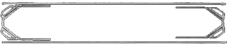 | asset/images/ui/button1.png | PNG | UI | 378×80 | RGBA | 12.5 KB | 是 | 正式运行时素材 | UI/themes/primary_menu_button_theme.tres | 待场景级审计 | Linear / Linear Mipmap | — |
| ART-0117 | 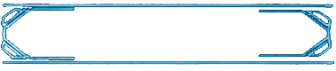 | asset/images/ui/button1_select.png | PNG | UI | 378×80 | RGBA | 12.6 KB | 是 | 正式运行时素材 | UI/themes/primary_menu_button_theme.tres | 待场景级审计 | Linear / Linear Mipmap | — |
| ART-0118 | asset/images/ui/fusion_star.png | PNG | UI | 16×16 | RGBA | 679 B | 是 | 正式运行时素材 | UI/scenes/star.tscn | 待场景级审计 | Linear / Linear Mipmap | — | |
| ART-0120 | 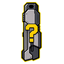 | asset/images/ui/missing_weapon_icon.png | PNG | UI | 64×64 | RGBA | 3.3 KB | 是 | 正式运行时素材 | UI/scripts/weapon_selector.gd | 待场景级审计 | Linear / Linear Mipmap | — |
| ART-0255 | 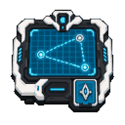 | asset/images/ui/rest_area/board_tactical.png | PNG | UI | 256×256 | RGBA | 12.8 KB | 是 | 正式运行时素材 | World/rest_area_zone_visuals.gd | 待场景级审计 | Linear / Linear Mipmap | — |
| ART-0256 | 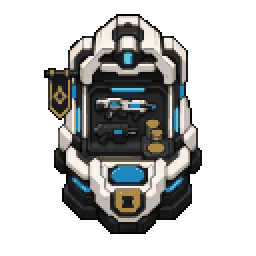 | asset/images/ui/rest_area/purchase_shop.png | PNG | UI | 256×256 | RGBA | 12.0 KB | 是 | 正式运行时素材 | World/rest_area_zone_visuals.gd | 待场景级审计 | Linear / Linear Mipmap | — |
| ART-0257 | 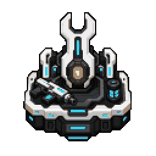 | asset/images/ui/rest_area/upgrade_gunsmith.png | PNG | UI | 256×256 | RGBA | 10.6 KB | 是 | 正式运行时素材 | World/rest_area_zone_visuals.gd | 待场景级审计 | Linear / Linear Mipmap | — |
| ART-0258 | 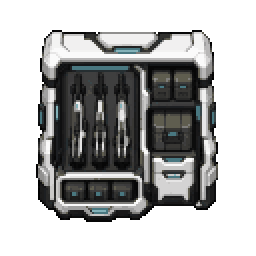 | asset/images/ui/rest_area/warehouse_armory.png | PNG | UI | 256×256 | RGBA | 11.2 KB | 是 | 正式运行时素材 | World/rest_area_zone_visuals.gd | 待场景级审计 | Linear / Linear Mipmap | — |
| ART-0123 | 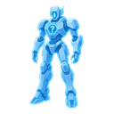 | asset/images/ui/unknown_mecha.png | PNG | UI | 128×128 | RGBA | 14.9 KB | 是 | 正式运行时素材 | UI/scenes/mecha_select.tscn | 待场景级审计 | Linear / Linear Mipmap | — |
| ART-0291 | UI/assets/hud_icons/reload_icon.png | PNG | UI | 16×16 | RGBA | 512 B | 否 | 正式运行时素材 | Player/Mechas/scripts/player_ammo_hud.gd | 待场景级审计 | Linear / Linear Mipmap | — | |
| ART-0292 | UI/assets/hud_icons/skill_energy_icon.png | PNG | UI | 16×16 | RGBA | 326 B | 否 | 正式运行时素材 | Player/Mechas/scripts/player_skill_hud.gd | 待场景级审计 | Linear / Linear Mipmap | — | |
| ART-0293 |  | UI/labels/assets/damage_digits_12px.png | PNG | UI | 104×12 | RGBA | 257 B | 是 | 正式运行时素材 | UI/labels/damage_digit_renderer.gd | 待场景级审计 | Linear / Linear Mipmap | — |
| ART-0294 | 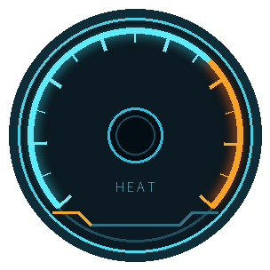 | UI/themes/modern/heat_gauge.png | PNG | UI | 304×304 | RGBA | 22.5 KB | 是 | 正式运行时素材 | UI/scripts/components/combat_resource_meter.gd | 待场景级审计 | Linear / Linear Mipmap | — |
| ART-0295 | 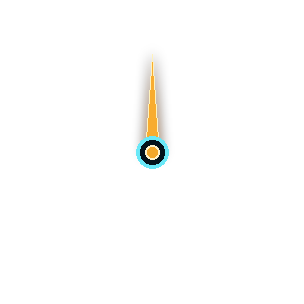 | UI/themes/modern/heat_needle.png | PNG | UI | 304×304 | RGBA | 3.9 KB | 是 | 正式运行时素材 | UI/scripts/components/combat_resource_meter.gd | 待场景级审计 | Linear / Linear Mipmap | — |
| ART-0296 | 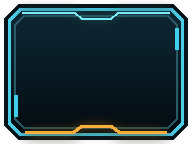 | UI/themes/modern/weapon_slot_main.png | PNG | UI | 192×144 | RGBA | 6.5 KB | 是 | 正式运行时素材 | UI/scenes/runtime/battle_hud.tscn UI/scripts/weapon_selector.gd | 待场景级审计 | Linear / Linear Mipmap | — |
| ART-0297 | 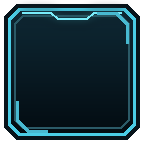 | UI/themes/modern/weapon_slot_offhand.png | PNG | UI | 144×144 | RGBA | 3.5 KB | 是 | 正式运行时素材 | UI/scenes/runtime/battle_hud.tscn UI/scripts/weapon_selector.gd | 待场景级审计 | Linear / Linear Mipmap | — |
| ART-0001 | icon.svg | SVG | 图标 | 128×128 | SVG | 950 B | 是 | 正式运行时素材 | project.godot | 待场景级审计 | 按消费者验证 | — | |
| ART-0015 | 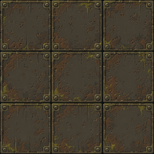 | asset/images/cells/corrosion.png | PNG | 地形/地块 | 256×256 | RGB | 114.5 KB | 是 | 正式运行时素材 | Board/Cells/cell.gd | 待场景级审计 | Nearest / Nearest Mipmap | — |
| ART-0016 | 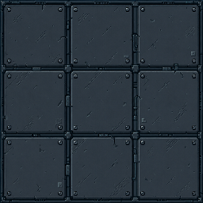 | asset/images/cells/default.png | PNG | 地形/地块 | 256×256 | RGB | 88.7 KB | 是 | 正式运行时素材 | Board/Cells/cell.gd Board/Cells/cell.tscn | 待场景级审计 | Nearest / Nearest Mipmap | — |
| ART-0018 | 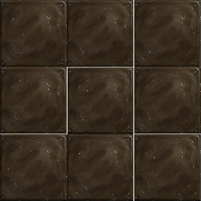 | asset/images/cells/dirt2.png | PNG | 地形/地块 | 256×256 | RGBA | 110.3 KB | 是 | 正式运行时素材 | data/cell_effects/corrosion_1.tres data/cell_effects/corrosion_2.tres data/cell_effects/corrosion_3.tres | 待场景级审计 | Nearest / Nearest Mipmap | — |
| ART-0019 | 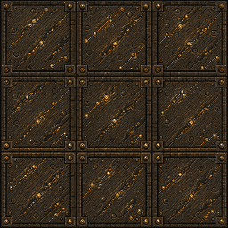 | asset/images/cells/double_loot.png | PNG | 地形/地块 | 256×256 | RGB | 144.2 KB | 是 | 正式运行时素材 | Board/Cells/cell.gd | 待场景级审计 | Nearest / Nearest Mipmap | — |
| ART-0020 | 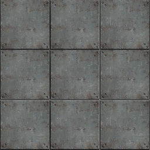 | asset/images/cells/fact1.png | PNG | 地形/地块 | 256×256 | RGBA | 124.4 KB | 是 | 正式运行时素材 | data/cell_effects/regen_1.tres data/cell_effects/regen_2.tres data/cell_effects/regen_3.tres | 待场景级审计 | Nearest / Nearest Mipmap | — |
| ART-0022 | 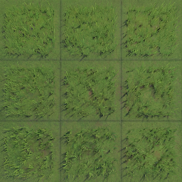 | asset/images/cells/glass.png | PNG | 地形/地块 | 256×256 | RGBA | 145.7 KB | 是 | 正式运行时素材 | data/cell_effects/jungle_1.tres data/cell_effects/jungle_2.tres data/cell_effects/jungle_3.tres | 待场景级审计 | Nearest / Nearest Mipmap | — |
| ART-0023 | 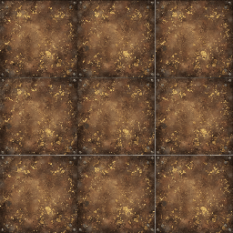 | asset/images/cells/gold1.png | PNG | 地形/地块 | 256×256 | RGBA | 158.1 KB | 是 | 正式运行时素材 | data/cell_effects/lucky_strike_1.tres data/cell_effects/lucky_strike_2.tres data/cell_effects/lucky_strike_3.tres | 待场景级审计 | Nearest / Nearest Mipmap | — |
| ART-0024 | 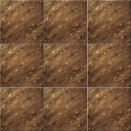 | asset/images/cells/gold2.png | PNG | 地形/地块 | 256×256 | RGBA | 157.0 KB | 是 | 正式运行时素材 | data/cell_effects/double_loot_1.tres data/cell_effects/double_loot_2.tres data/cell_effects/double_loot_3.tres | 待场景级审计 | Nearest / Nearest Mipmap | — |
| ART-0025 | 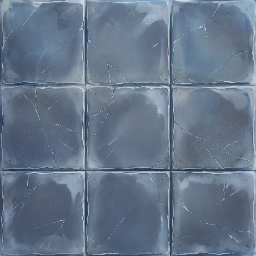 | asset/images/cells/ice.png | PNG | 地形/地块 | 256×256 | RGBA | 109.5 KB | 是 | 正式运行时素材 | data/cell_effects/speed_1.tres data/cell_effects/speed_2.tres data/cell_effects/speed_3.tres | 待场景级审计 | Nearest / Nearest Mipmap | — |
| ART-0026 | 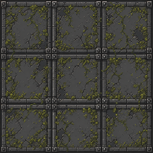 | asset/images/cells/jungle.png | PNG | 地形/地块 | 256×256 | RGB | 131.1 KB | 是 | 正式运行时素材 | Board/Cells/cell.gd | 待场景级审计 | Nearest / Nearest Mipmap | — |
| ART-0027 | 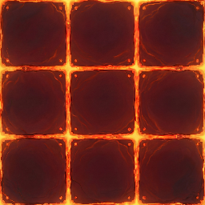 | asset/images/cells/lava.png | PNG | 地形/地块 | 256×256 | RGBA | 111.0 KB | 是 | 正式运行时素材 | data/cell_effects/low_hp_berserk_1.tres data/cell_effects/low_hp_berserk_2.tres data/cell_effects/low_hp_berserk_3.tres | 待场景级审计 | Nearest / Nearest Mipmap | — |
| ART-0028 | 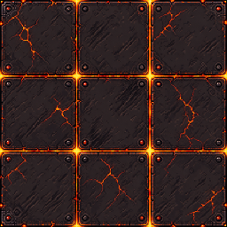 | asset/images/cells/low_hp_berserk.png | PNG | 地形/地块 | 256×256 | RGB | 122.3 KB | 是 | 正式运行时素材 | Board/Cells/cell.gd | 待场景级审计 | Nearest / Nearest Mipmap | — |
| ART-0029 | 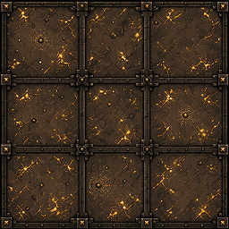 | asset/images/cells/lucky_strike.png | PNG | 地形/地块 | 256×256 | RGB | 139.7 KB | 是 | 正式运行时素材 | Board/Cells/cell.gd | 待场景级审计 | Nearest / Nearest Mipmap | — |
| ART-0030 | 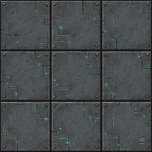 | asset/images/cells/regen.png | PNG | 地形/地块 | 256×256 | RGB | 116.0 KB | 是 | 正式运行时素材 | Board/Cells/cell.gd | 待场景级审计 | Nearest / Nearest Mipmap | — |
| ART-0031 | 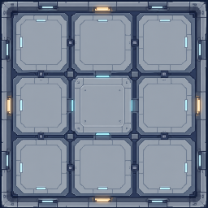 | asset/images/cells/rest_area_safe_medical.png | PNG | 地形/地块 | 256×256 | RGBA | 74.8 KB | 是 | 正式运行时素材 | UI/scripts/components/start_menu_backdrop.gd World/rest_area.gd World/rest_area.tscn | 待场景级审计 | Nearest / Nearest Mipmap | — |
| ART-0032 | 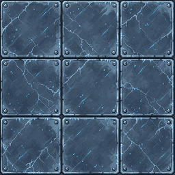 | asset/images/cells/speed_boost.png | PNG | 地形/地块 | 256×256 | RGB | 125.0 KB | 是 | 正式运行时素材 | Board/Cells/cell.gd | 待场景级审计 | Nearest / Nearest Mipmap | — |
| ART-0316 | 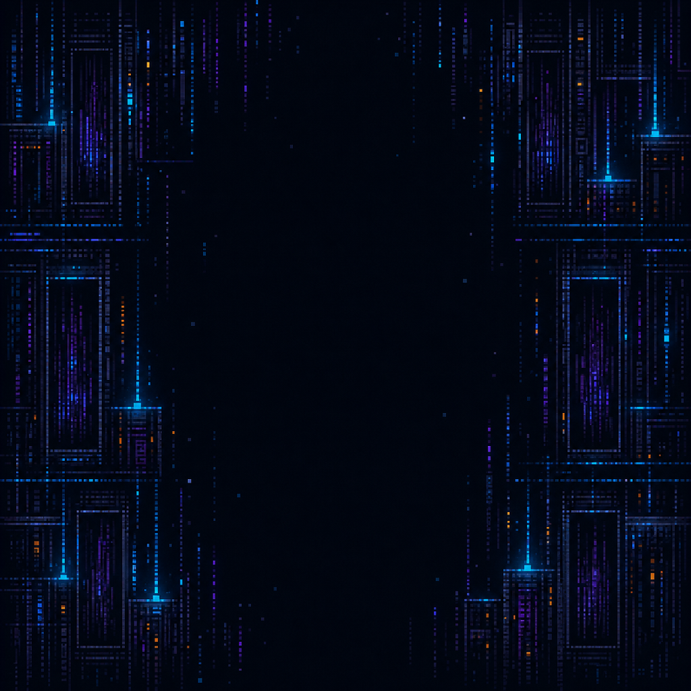 | Visual/Oblique/assets/background_variants/unloaded_world_quarantine_sector_vertical.png | PNG | 地形/地块 | 1024×1024 | RGBA | 1.2 MB | 是 | 正式运行时素材 | Visual/Oblique/unloaded_world_environment.gd | 待场景级审计 | Nearest / Nearest Mipmap | — |
| ART-0318 | 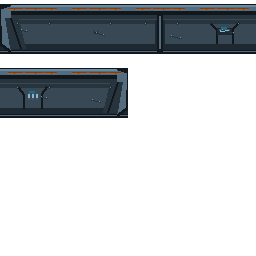 | Visual/Oblique/assets/board_support/industrial_board_skirt_atlas.png | PNG | 地形/地块 | 256×256 | RGBA | 1.9 KB | 是 | 正式运行时素材 | Visual/Oblique/board_platform_renderer.gd | 待场景级审计 | Nearest / Nearest Mipmap | — |
| ART-0014 | — | asset/fonts/NotoSansSC-Regular.ttf | TTF | 字体 | — | — | 16.9 MB | 是 | 正式运行时素材 | UI/themes/global_ui_theme.tres UI/themes/start_menu_theme.tres | 待场景级审计 | 灰度抗锯齿；中文字体禁用 MSDF | — |
| ART-0200 | asset/images/modules/pixel/wmod_bullet_size_stat.png | PNG | 弹体 | 32×32 | RGBA | 303 B | 是 | 正式运行时素材 | Player/Weapons/Modules/wmod_bullet_size_stat.tscn | 待场景级审计 | Nearest / Nearest Mipmap | — | |
| ART-0234 | asset/images/modules/pixel/wmod_projectile_speed_stat.png | PNG | 弹体 | 32×32 | RGBA | 338 B | 是 | 正式运行时素材 | Player/Weapons/Modules/wmod_projectile_speed_stat.tscn | 待场景级审计 | Nearest / Nearest Mipmap | — | |
| ART-0052 | asset/images/loot/chip.png | PNG | 掉落/奖励 | 32×32 | RGBA | 1.5 KB | 是 | 正式运行时素材 | Objects/loots/chip.tscn | 待场景级审计 | Nearest / Nearest Mipmap | — | |
| ART-0053 | asset/images/loot/credit_coin_01.png | PNG | 掉落/奖励 | 32×32 | RGBA | 1.4 KB | 是 | 正式运行时素材 | Objects/loots/coin.tscn UI/scripts/components/gold_hud_display.gd | 待场景级审计 | Nearest / Nearest Mipmap | — | |
| ART-0054 | asset/images/loot/credit_coin_02.png | PNG | 掉落/奖励 | 32×32 | RGBA | 1.4 KB | 是 | 正式运行时素材 | Objects/loots/coin.tscn | 待场景级审计 | Nearest / Nearest Mipmap | — | |
| ART-0055 | asset/images/loot/credit_coin_03.png | PNG | 掉落/奖励 | 32×32 | RGBA | 1.4 KB | 是 | 正式运行时素材 | Objects/loots/coin.tscn | 待场景级审计 | Nearest / Nearest Mipmap | — | |
| ART-0056 | asset/images/loot/credit_coin_04.png | PNG | 掉落/奖励 | 32×32 | RGBA | 1.5 KB | 是 | 正式运行时素材 | Objects/loots/coin.tscn | 待场景级审计 | Nearest / Nearest Mipmap | — | |
| ART-0057 | asset/images/loot/loot_box_closed.png | PNG | 掉落/奖励 | 64×64 | RGBA | 1.8 KB | 是 | 正式运行时素材 | Objects/loots/loot_box.tscn | 待场景级审计 | Nearest / Nearest Mipmap | — | |
| ART-0058 | 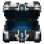 | asset/images/loot/loot_box_open.png | PNG | 掉落/奖励 | 64×64 | RGBA | 1.6 KB | 是 | 正式运行时素材 | Objects/loots/loot_box.tscn | 待场景级审计 | Nearest / Nearest Mipmap | — |
| ART-0036 | 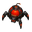 | asset/images/enemies/bomber.png | PNG | 敌人 | 32×32 | RGBA | 506 B | 是 | 正式运行时素材 | Npc/enemy/scenes/enemy_bomber.tscn | 待场景级审计 | Nearest / Nearest Mipmap | — |
| ART-0037 | 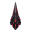 | asset/images/enemies/enemy_spike_projectile.png | PNG | 敌人 | 16×16 | RGBA | 134 B | 是 | 正式运行时素材 | Npc/enemy/scenes/enemy_spike_projectile.tscn | 待场景级审计 | Nearest / Nearest Mipmap | — |
| ART-0038 | 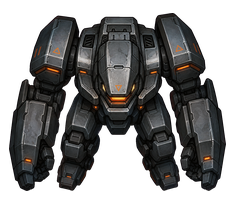 | asset/images/enemies/interceptor.png | PNG | 敌人 | 48×48 | RGBA | 3.3 KB | 是 | 正式运行时素材 | Npc/enemy/scenes/enemy_interceptor.tscn | 待场景级审计 | Nearest / Nearest Mipmap | — |
| ART-0039 | 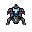 | asset/images/enemies/mine_crawler.png | PNG | 敌人 | 32×32 | RGBA | 1.1 KB | 是 | 正式运行时素材 | Npc/enemy/scenes/enemy_mine_crawler.tscn | 待场景级审计 | Nearest / Nearest Mipmap | — |
| ART-0040 | 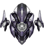 | asset/images/enemies/mirror_caster.png | PNG | 敌人 | 32×32 | RGBA | 972 B | 是 | 正式运行时素材 | Npc/enemy/scenes/enemy_mirror_caster.tscn | 待场景级审计 | Nearest / Nearest Mipmap | — |
| ART-0041 | asset/images/enemies/mirror_clone.png | PNG | 敌人 | 32×32 | RGBA | 1.0 KB | 是 | 正式运行时素材 | Npc/enemy/scenes/enemy_mirror_clone.tscn | 待场景级审计 | Nearest / Nearest Mipmap | — | |
| ART-0042 | 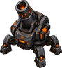 | asset/images/enemies/mortar_turret.png | PNG | 敌人 | 32×32 | RGBA | 679 B | 是 | 正式运行时素材 | Npc/enemy/scenes/enemy_mortar_turret.tscn | 待场景级审计 | Nearest / Nearest Mipmap | — |
| ART-0043 | asset/images/enemies/orbit_support.png | PNG | 敌人 | 32×32 | RGBA | 937 B | 是 | 正式运行时素材 | Npc/enemy/scenes/enemy_orbit_support.tscn | 待场景级审计 | Nearest / Nearest Mipmap | — | |
| ART-0044 | 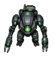 | asset/images/enemies/repair_unit.png | PNG | 敌人 | 32×32 | RGBA | 1.1 KB | 是 | 正式运行时素材 | Npc/enemy/scenes/enemy_repair_unit.tscn | 待场景级审计 | Nearest / Nearest Mipmap | — |
| ART-0045 | asset/images/enemies/reward_enemy.png | PNG | 敌人 | 32×32 | RGBA | 801 B | 是 | 正式运行时素材 | Npc/enemy/scenes/reward_enemy.tscn | 待场景级审计 | Nearest / Nearest Mipmap | — | |
| ART-0046 | asset/images/enemies/rolling_ball.png | PNG | 敌人 | 32×32 | RGBA | 1.0 KB | 是 | 正式运行时素材 | Npc/enemy/scenes/dummy.tscn Npc/enemy/scenes/enemy_rolling_ball.tscn | 待场景级审计 | Nearest / Nearest Mipmap | — | |
| ART-0047 | 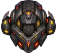 | asset/images/enemies/rolling_ball_elite.png | PNG | 敌人 | 48×48 | RGBA | 2.1 KB | 是 | 正式运行时素材 | Npc/enemy/scenes/enemy_rolling_ball_elite.tscn | 待场景级审计 | Nearest / Nearest Mipmap | — |
| ART-0048 | 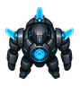 | asset/images/enemies/shield_core.png | PNG | 敌人 | 32×32 | RGBA | 829 B | 是 | 正式运行时素材 | Npc/enemy/scenes/enemy_shield_core.tscn | 待场景级审计 | Nearest / Nearest Mipmap | — |
| ART-0049 | 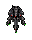 | asset/images/enemies/spike_turret.png | PNG | 敌人 | 32×40 | RGBA | 1.1 KB | 是 | 正式运行时素材 | Npc/enemy/scenes/enemy_spike_turret.tscn | 待场景级审计 | Nearest / Nearest Mipmap | — |
| ART-0050 | 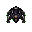 | asset/images/enemies/tar_mine_crawler.png | PNG | 敌人 | 32×32 | RGBA | 990 B | 是 | 正式运行时素材 | Npc/enemy/scenes/enemy_tar_mine_crawler.tscn | 待场景级审计 | Nearest / Nearest Mipmap | — |
| ART-0051 | 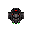 | asset/images/enemies/wheel_cart.png | PNG | 敌人 | 32×32 | RGBA | 792 B | 是 | 正式运行时素材 | Npc/enemy/scenes/enemy_wheel_cart.tscn | 待场景级审计 | Nearest / Nearest Mipmap | — |
| ART-0059 | asset/images/modules/missing_module.png | PNG | 模块/技能 | 32×32 | RGBA | 2.2 KB | 是 | 正式运行时素材 | Objects/loots/drop_item.gd | 待场景级审计 | Nearest / Nearest Mipmap | — | |
| ART-0196 | asset/images/modules/pixel/wmod_area_expander.png | PNG | 模块/技能 | 32×32 | RGBA | 480 B | 是 | 正式运行时素材 | Player/Weapons/Modules/wmod_area_expander.tscn | 待场景级审计 | Nearest / Nearest Mipmap | — | |
| ART-0197 | asset/images/modules/pixel/wmod_battle_focus_buff.png | PNG | 模块/技能 | 32×32 | RGBA | 401 B | 是 | 正式运行时素材 | Player/Weapons/Modules/wmod_battle_focus_buff.tscn | 待场景级审计 | Nearest / Nearest Mipmap | — | |
| ART-0198 | asset/images/modules/pixel/wmod_bleed_edge_physical.png | PNG | 模块/技能 | 32×32 | RGBA | 420 B | 是 | 正式运行时素材 | Player/Weapons/Modules/wmod_bleed_edge_physical.tscn | 待场景级审计 | Nearest / Nearest Mipmap | — | |
| ART-0199 | asset/images/modules/pixel/wmod_brittle_trigger_freeze.png | PNG | 模块/技能 | 32×32 | RGBA | 479 B | 是 | 正式运行时素材 | Player/Weapons/Modules/wmod_brittle_trigger_freeze.tscn | 待场景级审计 | Nearest / Nearest Mipmap | — | |
| ART-0201 | asset/images/modules/pixel/wmod_chill_chain_freeze.png | PNG | 模块/技能 | 32×32 | RGBA | 423 B | 是 | 正式运行时素材 | Player/Weapons/Modules/wmod_chill_chain_freeze.tscn | 待场景级审计 | Nearest / Nearest Mipmap | — | |
| ART-0202 | asset/images/modules/pixel/wmod_corrosive_touch_energy.png | PNG | 模块/技能 | 32×32 | RGBA | 388 B | 是 | 正式运行时素材 | Player/Weapons/Modules/wmod_corrosive_touch_energy.tscn | 待场景级审计 | Nearest / Nearest Mipmap | — | |
| ART-0203 | asset/images/modules/pixel/wmod_crit_amplifier.png | PNG | 模块/技能 | 32×32 | RGBA | 390 B | 是 | 正式运行时素材 | Player/Weapons/Modules/wmod_crit_amplifier.tscn | 待场景级审计 | Nearest / Nearest Mipmap | — | |
| ART-0204 | asset/images/modules/pixel/wmod_crit_calibrator.png | PNG | 模块/技能 | 32×32 | RGBA | 444 B | 是 | 正式运行时素材 | Player/Weapons/Modules/wmod_crit_calibrator.tscn | 待场景级审计 | Nearest / Nearest Mipmap | — | |
| ART-0205 | asset/images/modules/pixel/wmod_crossfire.png | PNG | 模块/技能 | 32×32 | RGBA | 334 B | 是 | 正式运行时素材 | Player/Weapons/Modules/wmod_crossfire.tscn | 待场景级审计 | Nearest / Nearest Mipmap | — | |
| ART-0206 | 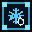 | asset/images/modules/pixel/wmod_cryo_infuser_freeze.png | PNG | 模块/技能 | 32×32 | RGBA | 471 B | 是 | 正式运行时素材 | Player/Weapons/Modules/wmod_cryo_infuser_freeze.tscn | 待场景级审计 | Nearest / Nearest Mipmap | — |
| ART-0207 | asset/images/modules/pixel/wmod_damage_up_stat.png | PNG | 模块/技能 | 32×32 | RGBA | 320 B | 是 | 正式运行时素材 | Player/Weapons/Modules/wmod_damage_up_stat.tscn | 待场景级审计 | Nearest / Nearest Mipmap | — | |
| ART-0208 |  | asset/images/modules/pixel/wmod_dash_cooler.png | PNG | 模块/技能 | 32×32 | RGBA | 361 B | 是 | 正式运行时素材 | Player/Weapons/Modules/wmod_dash_cooler.tscn | 待场景级审计 | Nearest / Nearest Mipmap | — |
| ART-0209 | asset/images/modules/pixel/wmod_diffusion_nozzle.png | PNG | 模块/技能 | 32×32 | RGBA | 477 B | 是 | 正式运行时素材 | Player/Weapons/Modules/wmod_diffusion_nozzle.tscn | 待场景级审计 | Nearest / Nearest Mipmap | — | |
| ART-0210 | asset/images/modules/pixel/wmod_dot_on_hit.png | PNG | 模块/技能 | 32×32 | RGBA | 384 B | 是 | 正式运行时素材 | Player/Weapons/Modules/wmod_dot_on_hit.tscn | 待场景级审计 | Nearest / Nearest Mipmap | — | |
| ART-0211 | asset/images/modules/pixel/wmod_ember_mark_fire.png | PNG | 模块/技能 | 32×32 | RGBA | 439 B | 是 | 正式运行时素材 | Player/Weapons/Modules/wmod_ember_mark_fire.tscn | 待场景级审计 | Nearest / Nearest Mipmap | — | |
| ART-0212 | asset/images/modules/pixel/wmod_expanded_magazine.png | PNG | 模块/技能 | 32×32 | RGBA | 290 B | 是 | 正式运行时素材 | Player/Weapons/Modules/wmod_expanded_magazine.tscn | 待场景级审计 | Nearest / Nearest Mipmap | — | |
| ART-0213 | asset/images/modules/pixel/wmod_fast_reload.png | PNG | 模块/技能 | 32×32 | RGBA | 335 B | 是 | 正式运行时素材 | Player/Weapons/Modules/wmod_fast_reload.tscn | 待场景级审计 | Nearest / Nearest Mipmap | — | |
| ART-0214 | asset/images/modules/pixel/wmod_firepower_diffusion.png | PNG | 模块/技能 | 32×32 | RGBA | 399 B | 是 | 正式运行时素材 | Player/Weapons/Modules/wmod_firepower_diffusion.tscn | 待场景级审计 | Nearest / Nearest Mipmap | — | |
| ART-0215 | asset/images/modules/pixel/wmod_heat_capacity_heat.png | PNG | 模块/技能 | 32×32 | RGBA | 331 B | 是 | 正式运行时素材 | Player/Weapons/Modules/wmod_heat_capacity_heat.tscn | 待场景级审计 | Nearest / Nearest Mipmap | — | |
| ART-0216 | asset/images/modules/pixel/wmod_heat_concentration_heat.png | PNG | 模块/技能 | 32×32 | RGBA | 328 B | 是 | 正式运行时素材 | Player/Weapons/Modules/wmod_heat_concentration_heat.tscn | 待场景级审计 | Nearest / Nearest Mipmap | — | |
| ART-0217 | asset/images/modules/pixel/wmod_heat_throttle.png | PNG | 模块/技能 | 32×32 | RGBA | 334 B | 是 | 正式运行时素材 | Player/Weapons/Modules/wmod_heat_throttle.tscn | 待场景级审计 | Nearest / Nearest Mipmap | — | |
| ART-0218 | asset/images/modules/pixel/wmod_heat_vent_heat.png | PNG | 模块/技能 | 32×32 | RGBA | 344 B | 是 | 正式运行时素材 | Player/Weapons/Modules/wmod_heat_vent_heat.tscn | 待场景级审计 | Nearest / Nearest Mipmap | — | |
| ART-0219 | asset/images/modules/pixel/wmod_ice_prison_freeze.png | PNG | 模块/技能 | 32×32 | RGBA | 447 B | 是 | 正式运行时素材 | Player/Weapons/Modules/wmod_ice_prison_freeze.tscn | 待场景级审计 | Nearest / Nearest Mipmap | — | |
| ART-0220 | asset/images/modules/pixel/wmod_impact_coil.png | PNG | 模块/技能 | 32×32 | RGBA | 374 B | 是 | 正式运行时素材 | Player/Weapons/Modules/wmod_impact_coil.tscn | 待场景级审计 | Nearest / Nearest Mipmap | — | |
| ART-0221 |  | asset/images/modules/pixel/wmod_inertial_aim.png | PNG | 模块/技能 | 32×32 | RGBA | 340 B | 是 | 正式运行时素材 | Player/Weapons/Modules/wmod_inertial_aim.tscn | 待场景级审计 | Nearest / Nearest Mipmap | — |
| ART-0222 |  | asset/images/modules/pixel/wmod_kill_endurance.png | PNG | 模块/技能 | 32×32 | RGBA | 340 B | 是 | 正式运行时素材 | Player/Weapons/Modules/wmod_kill_endurance.tscn | 待场景级审计 | Nearest / Nearest Mipmap | — |
| ART-0223 | asset/images/modules/pixel/wmod_lifesteal_on_hit.png | PNG | 模块/技能 | 32×32 | RGBA | 341 B | 是 | 正式运行时素材 | Player/Weapons/Modules/wmod_lifesteal_on_hit.tscn | 待场景级审计 | Nearest / Nearest Mipmap | — | |
| ART-0224 | asset/images/modules/pixel/wmod_lightning_chain_on_hit.png | PNG | 模块/技能 | 32×32 | RGBA | 398 B | 是 | 正式运行时素材 | Player/Weapons/Modules/wmod_lightning_chain_on_hit.tscn | 待场景级审计 | Nearest / Nearest Mipmap | — | |
| ART-0225 | asset/images/modules/pixel/wmod_magazine_pressure.png | PNG | 模块/技能 | 32×32 | RGBA | 318 B | 是 | 正式运行时素材 | Player/Weapons/Modules/wmod_magazine_pressure.tscn | 待场景级审计 | Nearest / Nearest Mipmap | — | |
| ART-0226 | asset/images/modules/pixel/wmod_molten_splash_fire.png | PNG | 模块/技能 | 32×32 | RGBA | 433 B | 是 | 正式运行时素材 | Player/Weapons/Modules/wmod_molten_splash_fire.tscn | 待场景级审计 | Nearest / Nearest Mipmap | — | |
| ART-0227 | asset/images/modules/pixel/wmod_momentum_haste.png | PNG | 模块/技能 | 32×32 | RGBA | 342 B | 是 | 正式运行时素材 | Player/Weapons/Modules/wmod_momentum_haste.tscn | 待场景级审计 | Nearest / Nearest Mipmap | — | |
| ART-0228 | asset/images/modules/pixel/wmod_multi_launcher.png | PNG | 模块/技能 | 32×32 | RGBA | 344 B | 是 | 正式运行时素材 | Player/Weapons/Modules/wmod_multi_launcher.tscn | 待场景级审计 | Nearest / Nearest Mipmap | — | |
| ART-0229 |  | asset/images/modules/pixel/wmod_overkill_recovery.png | PNG | 模块/技能 | 32×32 | RGBA | 340 B | 是 | 正式运行时素材 | Player/Weapons/Modules/wmod_overkill_recovery.tscn | 待场景级审计 | Nearest / Nearest Mipmap | — |
| ART-0230 | asset/images/modules/pixel/wmod_penetration_momentum.png | PNG | 模块/技能 | 32×32 | RGBA | 361 B | 是 | 正式运行时素材 | Player/Weapons/Modules/wmod_penetration_momentum.tscn | 待场景级审计 | Nearest / Nearest Mipmap | — | |
| ART-0231 | 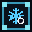 | asset/images/modules/pixel/wmod_permafrost_field_freeze.png | PNG | 模块/技能 | 32×32 | RGBA | 463 B | 是 | 正式运行时素材 | Player/Weapons/Modules/wmod_permafrost_field_freeze.tscn | 待场景级审计 | Nearest / Nearest Mipmap | — |
| ART-0232 | asset/images/modules/pixel/wmod_pierce_stat.png | PNG | 模块/技能 | 32×32 | RGBA | 331 B | 是 | 正式运行时素材 | Player/Weapons/Modules/wmod_pierce_stat.tscn | 待场景级审计 | Nearest / Nearest Mipmap | — | |
| ART-0233 | asset/images/modules/pixel/wmod_plague_seed_dot.png | PNG | 模块/技能 | 32×32 | RGBA | 436 B | 是 | 正式运行时素材 | Player/Weapons/Modules/wmod_plague_seed_dot.tscn | 待场景级审计 | Nearest / Nearest Mipmap | — | |
| ART-0235 | asset/images/modules/pixel/wmod_quick_cycle.png | PNG | 模块/技能 | 32×32 | RGBA | 399 B | 是 | 正式运行时素材 | Player/Weapons/Modules/wmod_quick_cycle.tscn | 待场景级审计 | Nearest / Nearest Mipmap | — | |
| ART-0236 | asset/images/modules/pixel/wmod_recovery_magnet.png | PNG | 模块/技能 | 32×32 | RGBA | 313 B | 是 | 正式运行时素材 | Player/Weapons/Modules/wmod_recovery_magnet.tscn | 待场景级审计 | Nearest / Nearest Mipmap | — | |
| ART-0237 | asset/images/modules/pixel/wmod_reload_blast_damage.png | PNG | 模块/技能 | 32×32 | RGBA | 428 B | 是 | 正式运行时素材 | Player/Weapons/Modules/wmod_reload_blast_damage.tscn | 待场景级审计 | Nearest / Nearest Mipmap | — | |
| ART-0238 | asset/images/modules/pixel/wmod_reload_blast_knockback.png | PNG | 模块/技能 | 32×32 | RGBA | 403 B | 是 | 正式运行时素材 | Player/Weapons/Modules/wmod_reload_blast_knockback.tscn | 待场景级审计 | Nearest / Nearest Mipmap | — | |
| ART-0239 | asset/images/modules/pixel/wmod_reload_damage_boost.png | PNG | 模块/技能 | 32×32 | RGBA | 390 B | 是 | 正式运行时素材 | Player/Weapons/Modules/wmod_reload_damage_boost.tscn | 待场景级审计 | Nearest / Nearest Mipmap | — | |
| ART-0240 | asset/images/modules/pixel/wmod_reload_move_boost.png | PNG | 模块/技能 | 32×32 | RGBA | 396 B | 是 | 正式运行时素材 | Player/Weapons/Modules/wmod_reload_move_boost.tscn | 待场景级审计 | Nearest / Nearest Mipmap | — | |
| ART-0241 | asset/images/modules/pixel/wmod_reload_offhand_boost.png | PNG | 模块/技能 | 32×32 | RGBA | 368 B | 是 | 正式运行时素材 | Player/Weapons/Modules/wmod_reload_offhand_boost.tscn | 待场景级审计 | Nearest / Nearest Mipmap | — | |
| ART-0242 | asset/images/modules/pixel/wmod_reload_shield_boost.png | PNG | 模块/技能 | 32×32 | RGBA | 459 B | 是 | 正式运行时素材 | Player/Weapons/Modules/wmod_reload_shield_boost.tscn | 待场景级审计 | Nearest / Nearest Mipmap | — | |
| ART-0243 | asset/images/modules/pixel/wmod_reload_speed_link.png | PNG | 模块/技能 | 32×32 | RGBA | 301 B | 是 | 正式运行时素材 | Player/Weapons/Modules/wmod_reload_speed_link.tscn | 待场景级审计 | Nearest / Nearest Mipmap | — | |
| ART-0244 |  | asset/images/modules/pixel/wmod_rhythm_converter.png | PNG | 模块/技能 | 32×32 | RGBA | 340 B | 是 | 正式运行时素材 | Player/Weapons/Modules/wmod_rhythm_converter.tscn | 待场景级审计 | Nearest / Nearest Mipmap | — |
| ART-0245 | asset/images/modules/pixel/wmod_shatter_strike_freeze.png | PNG | 模块/技能 | 32×32 | RGBA | 430 B | 是 | 正式运行时素材 | Player/Weapons/Modules/wmod_shatter_strike_freeze.tscn | 待场景级审计 | Nearest / Nearest Mipmap | — | |
| ART-0246 | asset/images/modules/pixel/wmod_stun_on_hit.png | PNG | 模块/技能 | 32×32 | RGBA | 468 B | 是 | 正式运行时素材 | Player/Weapons/Modules/wmod_stun_on_hit.tscn | 待场景级审计 | Nearest / Nearest Mipmap | — | |
| ART-0247 | asset/images/modules/pixel/wmod_subzero_extension_freeze.png | PNG | 模块/技能 | 32×32 | RGBA | 407 B | 是 | 正式运行时素材 | Player/Weapons/Modules/wmod_subzero_extension_freeze.tscn | 待场景级审计 | Nearest / Nearest Mipmap | — | |
| ART-0249 | asset/images/modules/pixel/wmod_vampiric_surge.png | PNG | 模块/技能 | 32×32 | RGBA | 453 B | 是 | 正式运行时素材 | Player/Weapons/Modules/wmod_vampiric_surge.tscn | 待场景级审计 | Nearest / Nearest Mipmap | — | |
| ART-0250 | asset/images/modules/pixel/wmod_weakness_relay.png | PNG | 模块/技能 | 32×32 | RGBA | 340 B | 是 | 正式运行时素材 | Player/Weapons/Modules/wmod_weakness_relay.tscn | 待场景级审计 | Nearest / Nearest Mipmap | — | |
| ART-0034 | asset/images/effects/machine_gun_front_shield.png | PNG | 武器 | 64×48 | RGBA | 1.1 KB | 是 | 正式运行时素材 | Player/Weapons/Branches/machine_gun_front_shield.tscn | 待场景级审计 | Nearest / Nearest Mipmap | — | |
| ART-0035 | 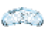 | asset/images/effects/machine_gun_front_shield_cracked.png | PNG | 武器 | 64×48 | RGBA | 1.3 KB | 是 | 正式运行时素材 | Player/Weapons/Branches/machine_gun_front_shield.gd | 待场景级审计 | Nearest / Nearest Mipmap | — |
| ART-0115 | 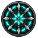 | asset/images/passives/piercing_blade_dance_icon.png | PNG | 武器 | 64×64 | RGBA | 9.3 KB | 是 | 正式运行时素材 | data/weapon_passives/piercing_blade_dance.tres | 待场景级审计 | Nearest / Nearest Mipmap | — |
| ART-0124 | asset/images/weapons/blaster.png | PNG | 武器 | 48×64 | P | 617 B | 是 | 正式运行时素材 | Player/Weapons/Instances/charged_blaster.tscn data/weapon_branches/charged_blaster_focus_lance.tres data/weapon_branches/charged_blaster_prism_fan.tres data/weapons/charged_blaster.tres | 待场景级审计 | Nearest / Nearest Mipmap | — | |
| ART-0125 | 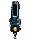 | asset/images/weapons/cannon2.png | PNG | 武器 | 48×64 | P | 574 B | 是 | 正式运行时素材 | Player/Weapons/Instances/cannon.tscn Player/Weapons/weapon.tscn data/weapon_branches/cannon_thermal.tres data/weapons/cannon.tres | 待场景级审计 | Nearest / Nearest Mipmap | — |
| ART-0126 | 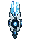 | asset/images/weapons/cannon3.png | PNG | 武器 | 48×64 | P | 680 B | 是 | 正式运行时素材 | Player/Weapons/Branches/cannon_zero_branch.gd Player/Weapons/weapon.tscn data/weapon_branches/cannon_zero.tres | 待场景级审计 | Nearest / Nearest Mipmap | — |
| ART-0127 | asset/images/weapons/chainsaw_launcher.png | PNG | 武器 | 48×64 | P | 469 B | 是 | 正式运行时素材 | Player/Weapons/Instances/chainsaw_launcher.tscn data/weapon_branches/chainsaw_explosive.tres data/weapon_branches/chainsaw_ricochet.tres data/weapons/chainsaw_luncher.tres | 待场景级审计 | Nearest / Nearest Mipmap | — | |
| ART-0128 | asset/images/weapons/dash_blade.png | PNG | 武器 | 48×64 | P | 339 B | 是 | 正式运行时素材 | Player/Weapons/Instances/dash_blade.tscn data/weapon_branches/dash_frost.tres data/weapon_branches/dash_return_execute.tres data/weapons/dash_blade.tres | 待场景级审计 | Nearest / Nearest Mipmap | — | |
| ART-0129 | asset/images/weapons/flamethrower.png | PNG | 武器 | 48×64 | P | 626 B | 是 | 正式运行时素材 | Player/Weapons/Instances/flamethrower.tscn data/weapon_branches/flamethrower_fire_aura.tres data/weapon_branches/flamethrower_long_cone.tres data/weapons/flamethrower.tres | 待场景级审计 | Nearest / Nearest Mipmap | — | |
| ART-0130 | asset/images/weapons/glacier_projector.png | PNG | 武器 | 48×64 | P | 748 B | 是 | 正式运行时素材 | Player/Weapons/Instances/glacier_projector.tscn data/weapon_branches/glacier_subzero_battery.tres data/weapon_branches/glacier_whiteout_expansion.tres data/weapons/glacier_projector.tres | 待场景级审计 | Nearest / Nearest Mipmap | — | |
| ART-0131 | asset/images/weapons/laser.png | PNG | 武器 | 48×64 | P | 361 B | 是 | 正式运行时素材 | Player/Weapons/Instances/laser.tscn data/weapon_branches/laser_prism_splitter.tres data/weapon_branches/laser_tracking_lens.tres data/weapons/laser.tres | 待场景级审计 | Nearest / Nearest Mipmap | — | |
| ART-0132 | asset/images/weapons/machine_gun.png | PNG | 武器 | 48×64 | RGBA | 1.8 KB | 是 | 正式运行时素材 | Player/Weapons/Instances/machine_gun.tscn data/weapon_branches/machine_gun_shield.tres data/weapons/machine_gun.tres | 待场景级审计 | Nearest / Nearest Mipmap | — | |
| ART-0133 | asset/images/weapons/mg2.png | PNG | 武器 | 48×64 | P | 688 B | 是 | 正式运行时素材 | Player/Weapons/Branches/machine_gun_gatling_branch.gd data/weapon_branches/machine_gun_twin.tres | 待场景级审计 | Nearest / Nearest Mipmap | — | |
| ART-0134 | asset/images/weapons/orbit.png | PNG | 武器 | 48×64 | P | 660 B | 是 | 正式运行时素材 | Player/Weapons/Instances/orbit.tscn data/weapon_branches/orbit_energy.tres data/weapon_branches/orbit_frost.tres data/weapons/orbit.tres | 待场景级审计 | Nearest / Nearest Mipmap | — | |
| ART-0135 | asset/images/weapons/pistol.png | PNG | 武器 | 48×64 | P | 471 B | 是 | 正式运行时素材 | Player/Weapons/Instances/pistol.tscn Player/Weapons/glacier_projector.tscn Player/Weapons/weapon.tscn data/weapon_branches/pistol_arc_coil.tres 另有 2 处 | 待场景级审计 | Nearest / Nearest Mipmap | — | |
| ART-0136 | asset/images/weapons/plasma_lance.png | PNG | 武器 | 48×64 | P | 326 B | 是 | 正式运行时素材 | Player/Weapons/Instances/plasma_lance.tscn data/weapon_branches/plasma_overcharge_lance.tres data/weapon_branches/plasma_piercing_lance.tres data/weapons/plasma_lance.tres | 待场景级审计 | Nearest / Nearest Mipmap | — | |
| ART-0277 | asset/images/weapons/projectiles/chainsaw_spin_01.png | PNG | 武器 | 32×32 | RGBA | 943 B | 是 | 正式运行时素材 | Player/Weapons/Instances/chainsaw_launcher.gd Player/Weapons/Projectiles/chainsaw_spin_frames.tres | 待场景级审计 | Nearest / Nearest Mipmap | — | |
| ART-0278 | asset/images/weapons/projectiles/chainsaw_spin_02.png | PNG | 武器 | 32×32 | RGBA | 987 B | 是 | 正式运行时素材 | Player/Weapons/Projectiles/chainsaw_spin_frames.tres | 待场景级审计 | Nearest / Nearest Mipmap | — | |
| ART-0279 | asset/images/weapons/projectiles/chainsaw_spin_03.png | PNG | 武器 | 32×32 | RGBA | 1.0 KB | 是 | 正式运行时素材 | Player/Weapons/Projectiles/chainsaw_spin_frames.tres | 待场景级审计 | Nearest / Nearest Mipmap | — | |
| ART-0280 | asset/images/weapons/projectiles/chainsaw_spin_04.png | PNG | 武器 | 32×32 | RGBA | 952 B | 是 | 正式运行时素材 | Player/Weapons/Projectiles/chainsaw_spin_frames.tres | 待场景级审计 | Nearest / Nearest Mipmap | — | |
| ART-0281 | asset/images/weapons/projectiles/chainsaw_spin_05.png | PNG | 武器 | 32×32 | RGBA | 998 B | 是 | 正式运行时素材 | Player/Weapons/Projectiles/chainsaw_spin_frames.tres | 待场景级审计 | Nearest / Nearest Mipmap | — | |
| ART-0282 | asset/images/weapons/projectiles/chainsaw_spin_06.png | PNG | 武器 | 32×32 | RGBA | 1.0 KB | 是 | 正式运行时素材 | Player/Weapons/Projectiles/chainsaw_spin_frames.tres | 待场景级审计 | Nearest / Nearest Mipmap | — | |
| ART-0283 | asset/images/weapons/projectiles/orbit_projectile.png | PNG | 武器 | 32×32 | RGBA | 615 B | 是 | 正式运行时素材 | Player/Weapons/Instances/orbit.gd | 待场景级审计 | Nearest / Nearest Mipmap | — | |
| ART-0284 | asset/images/weapons/projectiles/pistol_projectile.png | PNG | 武器 | 16×24 | RGBA | 390 B | 是 | 正式运行时素材 | Player/Weapons/Instances/pistol.gd | 待场景级审计 | Nearest / Nearest Mipmap | — | |
| ART-0285 | asset/images/weapons/projectiles/plasma.png | PNG | 武器 | 12×13 | RGBA | 342 B | 是 | 正式运行时素材 | Player/Weapons/Instances/cannon.gd Player/Weapons/Instances/machine_gun.gd Player/Weapons/Instances/plasma_lance.gd Player/Weapons/Projectiles/plasma_lance_projectile.tscn | 待场景级审计 | Nearest / Nearest Mipmap | — | |
| ART-0286 | asset/images/weapons/projectiles/rocket_projectile.png | PNG | 武器 | 32×48 | RGBA | 408 B | 是 | 正式运行时素材 | Player/Weapons/Instances/rocket_launcher.gd | 待场景级审计 | Nearest / Nearest Mipmap | — | |
| ART-0287 | asset/images/weapons/projectiles/shotgun_pellet.png | PNG | 武器 | 16×20 | RGBA | 429 B | 是 | 正式运行时素材 | Player/Weapons/Instances/shotgun.gd | 待场景级审计 | Nearest / Nearest Mipmap | — | |
| ART-0288 | asset/images/weapons/projectiles/sniper_projectile.png | PNG | 武器 | 24×64 | RGBA | 231 B | 是 | 正式运行时素材 | Player/Weapons/Instances/sniper.gd Player/Weapons/Projectiles/sniper_projectile.tscn | 待场景级审计 | Nearest / Nearest Mipmap | — | |
| ART-0289 | asset/images/weapons/projectiles/spear_projectile.png | PNG | 武器 | 16×64 | RGBA | 528 B | 是 | 正式运行时素材 | Player/Weapons/Instances/spear_launcher.gd | 待场景级审计 | Nearest / Nearest Mipmap | — | |
| ART-0137 | asset/images/weapons/rocket_launcher.png | PNG | 武器 | 48×64 | P | 665 B | 是 | 正式运行时素材 | Player/Weapons/Instances/rocket_launcher.tscn data/weapon_branches/rocket_napalm.tres data/weapon_branches/rocket_salvo.tres data/weapons/rocket_luncher.tres | 待场景级审计 | Nearest / Nearest Mipmap | — | |
| ART-0138 | asset/images/weapons/shotgun.png | PNG | 武器 | 48×64 | P | 637 B | 是 | 正式运行时素材 | Player/Weapons/Instances/shotgun.tscn data/weapon_branches/shotgun_double_breach.tres data/weapon_branches/shotgun_shatter.tres data/weapons/shotgun.tres | 待场景级审计 | Nearest / Nearest Mipmap | — | |
| ART-0139 | asset/images/weapons/sniper.png | PNG | 武器 | 48×64 | P | 352 B | 是 | 正式运行时素材 | Player/Weapons/Instances/sniper.tscn data/weapon_branches/sniper_deep_pierce.tres data/weapon_branches/sniper_impact_burst.tres data/weapons/sniper.tres | 待场景级审计 | Nearest / Nearest Mipmap | — | |
| ART-0140 | asset/images/weapons/spear_launcher.png | PNG | 武器 | 48×64 | RGBA | 1.4 KB | 是 | 正式运行时素材 | Player/Weapons/Instances/spear_launcher.tscn data/weapon_branches/spear_multi_pierce.tres data/weapon_branches/spear_rending.tres data/weapons/Spear.tres | 待场景级审计 | Nearest / Nearest Mipmap | — | |
| ART-0159 | asset/images/effects/explosion/explosion_01.png | PNG | 特效 | 64×64 | RGBA | 373 B | 是 | 正式运行时素材 | Player/Weapons/Effects/explosion_effect.gd | 待场景级审计 | Nearest / Nearest Mipmap | — | |
| ART-0193 | asset/images/effects/protocol/protocol_square_topdown.png | PNG | 特效 | 128×128 | RGBA | 419 B | 是 | 正式运行时素材 | World/battle_contract/beacon_projected_visual.gd | 待场景级审计 | Nearest / Nearest Mipmap | — | |
| ART-0195 | asset/images/effects/slow_zone/tar_slow_zone_amber.png | PNG | 特效 | 128×128 | RGBA | 18.7 KB | 是 | 正式运行时素材 | Npc/enemy/scripts/enemy_tar_slow_zone.gd | 待场景级审计 | Nearest / Nearest Mipmap | — | |
| ART-0248 | asset/images/modules/pixel/wmod_trail_aoe_freeze.png | PNG | 特效 | 32×32 | RGBA | 445 B | 是 | 正式运行时素材 | Player/Weapons/Modules/wmod_trail_aoe_freeze.tscn | 待场景级审计 | Nearest / Nearest Mipmap | — | |
| ART-0141 | asset/images/characters/pixel/idle_bottom.png | PNG | 玩家/机甲 | 128×128 | RGBA | 7.4 KB | 是 | 正式运行时素材 | Player/Mechas/scenes/Player.tscn Player/Mechas/scripts/Player.gd UI/scripts/components/start_menu_backdrop.gd | 待场景级审计 | Nearest / Nearest Mipmap | — | |
| ART-0142 | asset/images/characters/pixel/idle_top.png | PNG | 玩家/机甲 | 128×128 | RGBA | 7.5 KB | 是 | 正式运行时素材 | Player/Mechas/scripts/Player.gd | 待场景级审计 | Nearest / Nearest Mipmap | — | |
| ART-0143 | asset/images/characters/pixel/move_bottom_01.png | PNG | 玩家/机甲 | 128×128 | RGBA | 7.5 KB | 是 | 正式运行时素材 | Player/Mechas/animations/mecha_move_frames.tres | 待场景级审计 | Nearest / Nearest Mipmap | — | |
| ART-0144 | asset/images/characters/pixel/move_bottom_02.png | PNG | 玩家/机甲 | 128×128 | RGBA | 7.5 KB | 是 | 正式运行时素材 | Player/Mechas/animations/mecha_move_frames.tres | 待场景级审计 | Nearest / Nearest Mipmap | — | |
| ART-0145 | asset/images/characters/pixel/move_bottom_03.png | PNG | 玩家/机甲 | 128×128 | RGBA | 7.9 KB | 是 | 正式运行时素材 | Player/Mechas/animations/mecha_move_frames.tres | 待场景级审计 | Nearest / Nearest Mipmap | — | |
| ART-0146 | asset/images/characters/pixel/move_bottom_04.png | PNG | 玩家/机甲 | 128×128 | RGBA | 7.3 KB | 是 | 正式运行时素材 | Player/Mechas/animations/mecha_move_frames.tres | 待场景级审计 | Nearest / Nearest Mipmap | — | |
| ART-0147 | asset/images/characters/pixel/move_bottom_05.png | PNG | 玩家/机甲 | 128×128 | RGBA | 7.3 KB | 是 | 正式运行时素材 | Player/Mechas/animations/mecha_move_frames.tres | 待场景级审计 | Nearest / Nearest Mipmap | — | |
| ART-0148 | asset/images/characters/pixel/move_bottom_06.png | PNG | 玩家/机甲 | 128×128 | RGBA | 7.3 KB | 是 | 正式运行时素材 | Player/Mechas/animations/mecha_move_frames.tres | 待场景级审计 | Nearest / Nearest Mipmap | — | |
| ART-0149 | asset/images/characters/pixel/move_bottom_07.png | PNG | 玩家/机甲 | 128×128 | RGBA | 7.2 KB | 是 | 正式运行时素材 | Player/Mechas/animations/mecha_move_frames.tres | 待场景级审计 | Nearest / Nearest Mipmap | — | |
| ART-0150 | asset/images/characters/pixel/move_bottom_08.png | PNG | 玩家/机甲 | 128×128 | RGBA | 7.2 KB | 是 | 正式运行时素材 | Player/Mechas/animations/mecha_move_frames.tres | 待场景级审计 | Nearest / Nearest Mipmap | — | |
| ART-0151 | asset/images/characters/pixel/move_top_01.png | PNG | 玩家/机甲 | 128×128 | RGBA | 7.5 KB | 是 | 正式运行时素材 | Player/Mechas/animations/mecha_move_frames.tres | 待场景级审计 | Nearest / Nearest Mipmap | — | |
| ART-0152 | asset/images/characters/pixel/move_top_02.png | PNG | 玩家/机甲 | 128×128 | RGBA | 7.2 KB | 是 | 正式运行时素材 | Player/Mechas/animations/mecha_move_frames.tres | 待场景级审计 | Nearest / Nearest Mipmap | — | |
| ART-0153 | asset/images/characters/pixel/move_top_03.png | PNG | 玩家/机甲 | 128×128 | RGBA | 7.3 KB | 是 | 正式运行时素材 | Player/Mechas/animations/mecha_move_frames.tres | 待场景级审计 | Nearest / Nearest Mipmap | — | |
| ART-0154 | asset/images/characters/pixel/move_top_04.png | PNG | 玩家/机甲 | 128×128 | RGBA | 7.7 KB | 是 | 正式运行时素材 | Player/Mechas/animations/mecha_move_frames.tres | 待场景级审计 | Nearest / Nearest Mipmap | — | |
| ART-0155 | asset/images/characters/pixel/move_top_05.png | PNG | 玩家/机甲 | 128×128 | RGBA | 7.8 KB | 是 | 正式运行时素材 | Player/Mechas/animations/mecha_move_frames.tres | 待场景级审计 | Nearest / Nearest Mipmap | — | |
| ART-0156 | asset/images/characters/pixel/move_top_06.png | PNG | 玩家/机甲 | 128×128 | RGBA | 7.4 KB | 是 | 正式运行时素材 | Player/Mechas/animations/mecha_move_frames.tres | 待场景级审计 | Nearest / Nearest Mipmap | — | |
| ART-0157 | asset/images/characters/pixel/move_top_07.png | PNG | 玩家/机甲 | 128×128 | RGBA | 7.5 KB | 是 | 正式运行时素材 | Player/Mechas/animations/mecha_move_frames.tres | 待场景级审计 | Nearest / Nearest Mipmap | — | |
| ART-0158 | asset/images/characters/pixel/move_top_08.png | PNG | 玩家/机甲 | 128×128 | RGBA | 7.6 KB | 是 | 正式运行时素材 | Player/Mechas/animations/mecha_move_frames.tres | 待场景级审计 | Nearest / Nearest Mipmap | — | |
| ART-0033 | asset/images/characters/ranger_drone.png | PNG | 玩家/机甲 | 64×64 | RGBA | 4.5 KB | 是 | 正式运行时素材 | Player/Skills/ranger_drone_strike.gd | 待场景级审计 | Nearest / Nearest Mipmap | — | |
| ART-0251 | asset/images/ui/heat_gauge/heat_gauge.png | PNG | UI | 304×304 | RGBA | 109.9 KB | 是 | 疑似孤儿/待确认 | — | 待场景级审计 | Linear / Linear Mipmap | 未发现直接 res:// 运行时引用；需检查 UID、动态路径或生成流程 | |
| ART-0252 | asset/images/ui/heat_gauge/heat_gauge_pixel.png | PNG | UI | 152×152 | RGBA | 9.0 KB | 是 | 疑似孤儿/待确认 | — | 待场景级审计 | Linear / Linear Mipmap | 未发现直接 res:// 运行时引用；需检查 UID、动态路径或生成流程 | |
| ART-0253 | asset/images/ui/heat_gauge/heat_needle.png | PNG | UI | 304×304 | RGBA | 6.8 KB | 是 | 疑似孤儿/待确认 | — | 待场景级审计 | Linear / Linear Mipmap | 未发现直接 res:// 运行时引用；需检查 UID、动态路径或生成流程 | |
| ART-0254 | asset/images/ui/heat_gauge/heat_needle_pixel.png | PNG | UI | 152×152 | RGBA | 825 B | 是 | 疑似孤儿/待确认 | — | 待场景级审计 | Linear / Linear Mipmap | 未发现直接 res:// 运行时引用；需检查 UID、动态路径或生成流程 | |
| ART-0119 | asset/images/ui/mainhand.png | PNG | UI | 150×150 | RGBA | 22.7 KB | 是 | 疑似孤儿/待确认 | — | 待场景级审计 | Linear / Linear Mipmap | 未发现直接 res:// 运行时引用；需检查 UID、动态路径或生成流程 | |
| ART-0121 | asset/images/ui/offhand.png | PNG | UI | 150×150 | RGBA | 11.9 KB | 是 | 疑似孤儿/待确认 | — | 待场景级审计 | Linear / Linear Mipmap | 未发现直接 res:// 运行时引用；需检查 UID、动态路径或生成流程 | |
| ART-0122 |  | asset/images/ui/status frame.png | PNG | UI | 431×169 | RGBA | 22.4 KB | 是 | 疑似孤儿/待确认 | — | 待场景级审计 | Linear / Linear Mipmap | 未发现直接 res:// 运行时引用；需检查 UID、动态路径或生成流程 |
| ART-0298 | UI/themes/pixel/generated/weapon_slot_main.png | PNG | UI | 96×72 | RGBA | 408 B | 是 | 疑似孤儿/待确认 | — | 待场景级审计 | Linear / Linear Mipmap | 未发现直接 res:// 运行时引用；需检查 UID、动态路径或生成流程 | |
| ART-0299 | UI/themes/pixel/generated/weapon_slot_offhand.png | PNG | UI | 72×72 | RGBA | 353 B | 是 | 疑似孤儿/待确认 | — | 待场景级审计 | Linear / Linear Mipmap | 未发现直接 res:// 运行时引用；需检查 UID、动态路径或生成流程 | |
| ART-0300 | UI/themes/player_ammo_hud/generated/ammo_container.png | PNG | UI | 256×128 | RGBA | 27.5 KB | 是 | 疑似孤儿/待确认 | — | 待场景级审计 | Linear / Linear Mipmap | 未发现直接 res:// 运行时引用；需检查 UID、动态路径或生成流程 | |
| ART-0301 | UI/themes/player_ammo_hud/generated/ammo_container_chroma.png | PNG | UI | 2048×768 | RGB | 1.2 MB | 是 | 疑似孤儿/待确认 | — | 待场景级审计 | Linear / Linear Mipmap | 未发现直接 res:// 运行时引用；需检查 UID、动态路径或生成流程 | |
| ART-0302 | UI/themes/player_ammo_hud/generated/ammo_container_transparent.png | PNG | UI | 2048×768 | RGBA | 290.6 KB | 是 | 疑似孤儿/待确认 | — | 待场景级审计 | Linear / Linear Mipmap | 未发现直接 res:// 运行时引用；需检查 UID、动态路径或生成流程 | |
| ART-0303 | UI/themes/player_status_hud/generated/ammo_icon.png | PNG | UI | 20×16 | RGBA | 132 B | 是 | 疑似孤儿/待确认 | — | 待场景级审计 | Linear / Linear Mipmap | 未发现直接 res:// 运行时引用；需检查 UID、动态路径或生成流程 | |
| ART-0304 | UI/themes/player_status_hud/generated/energy_125_fill.png | PNG | UI | 135×20 | RGBA | 233 B | 是 | 疑似孤儿/待确认 | — | 待场景级审计 | Linear / Linear Mipmap | 未发现直接 res:// 运行时引用；需检查 UID、动态路径或生成流程 | |
| ART-0305 | UI/themes/player_status_hud/generated/hp_fill.png | PNG | UI | 198×20 | RGBA | 255 B | 是 | 疑似孤儿/待确认 | — | 待场景级审计 | Linear / Linear Mipmap | 未发现直接 res:// 运行时引用；需检查 UID、动态路径或生成流程 | |
| ART-0306 | UI/themes/player_status_hud/generated/shield_fill.png | PNG | UI | 198×7 | RGBA | 160 B | 是 | 疑似孤儿/待确认 | — | 待场景级审计 | Linear / Linear Mipmap | 未发现直接 res:// 运行时引用；需检查 UID、动态路径或生成流程 | |
| ART-0307 | UI/themes/player_status_hud/generated/ui_frame.png | PNG | UI | 1801×512 | RGBA | 1.2 MB | 是 | 疑似孤儿/待确认 | — | 待场景级审计 | Linear / Linear Mipmap | 未发现直接 res:// 运行时引用；需检查 UID、动态路径或生成流程 | |
| ART-0308 | UI/themes/player_status_hud/generated/ui_frame_clean_panel.png | PNG | UI | 356×96 | RGBA | 513 B | 是 | 疑似孤儿/待确认 | — | 待场景级审计 | Linear / Linear Mipmap | 未发现直接 res:// 运行时引用；需检查 UID、动态路径或生成流程 | |
| ART-0309 | UI/themes/player_status_hud/generated/ui_frame_rim_only.png | PNG | UI | 1798×511 | RGBA | 421.8 KB | 是 | 疑似孤儿/待确认 | — | 待场景级审计 | Linear / Linear Mipmap | 未发现直接 res:// 运行时引用；需检查 UID、动态路径或生成流程 | |
| ART-0017 | asset/images/cells/dirt1.png | PNG | 地形/地块 | 256×256 | RGBA | 111.3 KB | 是 | 疑似孤儿/待确认 | — | 待场景级审计 | Nearest / Nearest Mipmap | 未发现直接 res:// 运行时引用；需检查 UID、动态路径或生成流程 | |
| ART-0021 | asset/images/cells/fact2.png | PNG | 地形/地块 | 256×256 | RGBA | 134.6 KB | 是 | 疑似孤儿/待确认 | — | 待场景级审计 | Nearest / Nearest Mipmap | 未发现直接 res:// 运行时引用；需检查 UID、动态路径或生成流程 | |
| ART-0311 | Visual/Oblique/assets/background_variants/unloaded_world_data_rift.png | PNG | 地形/地块 | 1024×1024 | RGBA | 1.2 MB | 是 | 疑似孤儿/待确认 | — | 待场景级审计 | Nearest / Nearest Mipmap | 未发现直接 res:// 运行时引用；需检查 UID、动态路径或生成流程 | |
| ART-0312 | Visual/Oblique/assets/background_variants/unloaded_world_data_rift_vertical.png | PNG | 地形/地块 | 1024×1024 | RGBA | 1.2 MB | 是 | 疑似孤儿/待确认 | — | 待场景级审计 | Nearest / Nearest Mipmap | 未发现直接 res:// 运行时引用；需检查 UID、动态路径或生成流程 | |
| ART-0313 | Visual/Oblique/assets/background_variants/unloaded_world_dormant_nodes.png | PNG | 地形/地块 | 1024×1024 | RGBA | 1.2 MB | 是 | 疑似孤儿/待确认 | — | 待场景级审计 | Nearest / Nearest Mipmap | 未发现直接 res:// 运行时引用；需检查 UID、动态路径或生成流程 | |
| ART-0314 | Visual/Oblique/assets/background_variants/unloaded_world_dormant_nodes_vertical.png | PNG | 地形/地块 | 1024×1024 | RGBA | 1.1 MB | 是 | 疑似孤儿/待确认 | — | 待场景级审计 | Nearest / Nearest Mipmap | 未发现直接 res:// 运行时引用；需检查 UID、动态路径或生成流程 | |
| ART-0315 | Visual/Oblique/assets/background_variants/unloaded_world_quarantine_sector.png | PNG | 地形/地块 | 1024×1024 | RGBA | 1.2 MB | 是 | 疑似孤儿/待确认 | — | 待场景级审计 | Nearest / Nearest Mipmap | 未发现直接 res:// 运行时引用；需检查 UID、动态路径或生成流程 | |
| ART-0317 | Visual/Oblique/assets/board_support/floating_board_skirt_atlas.png | PNG | 地形/地块 | 256×256 | RGBA | 1.4 KB | 是 | 疑似孤儿/待确认 | — | 待场景级审计 | Nearest / Nearest Mipmap | 未发现直接 res:// 运行时引用；需检查 UID、动态路径或生成流程 | |
| ART-0319 | Visual/Oblique/assets/board_support/unloaded_board_fragment_atlas.png | PNG | 地形/地块 | 256×256 | RGBA | 20.6 KB | 是 | 疑似孤儿/待确认 | — | 待场景级审计 | Nearest / Nearest Mipmap | 未发现直接 res:// 运行时引用；需检查 UID、动态路径或生成流程 | |
| ART-0320 | Visual/Oblique/assets/board_support/world_streaming_data_curtain_normalized.png | PNG | 地形/地块 | 256×256 | RGBA | 64.6 KB | 是 | 疑似孤儿/待确认 | — | 待场景级审计 | Nearest / Nearest Mipmap | 未发现直接 res:// 运行时引用；需检查 UID、动态路径或生成流程 | |
| ART-0321 | Visual/Oblique/assets/board_support/world_streaming_pillar_face_normalized.png | PNG | 地形/地块 | 256×256 | RGBA | 89.3 KB | 是 | 疑似孤儿/待确认 | — | 待场景级审计 | Nearest / Nearest Mipmap | 未发现直接 res:// 运行时引用；需检查 UID、动态路径或生成流程 | |
| ART-0310 | Visual/Oblique/assets/unloaded_world_background.png | PNG | 地形/地块 | 1024×1024 | RGBA | 1.2 MB | 是 | 疑似孤儿/待确认 | — | 待场景级审计 | Nearest / Nearest Mipmap | 未发现直接 res:// 运行时引用；需检查 UID、动态路径或生成流程 | |
| ART-0322 | Visual/Oblique/concepts/board_support/board_support_concept_a_server_wall.png | PNG | 地形/地块 | 1684×934 | RGB | 1.8 MB | 是 | 疑似孤儿/待确认 | — | 待场景级审计 | Nearest / Nearest Mipmap | 未发现直接 res:// 运行时引用；需检查 UID、动态路径或生成流程 | |
| ART-0323 | Visual/Oblique/concepts/board_support/board_support_concept_b_open_data_dock.png | PNG | 地形/地块 | 1672×941 | RGB | 2.1 MB | 是 | 疑似孤儿/待确认 | — | 待场景级审计 | Nearest / Nearest Mipmap | 未发现直接 res:// 运行时引用；需检查 UID、动态路径或生成流程 | |
| ART-0324 | Visual/Oblique/concepts/board_support/board_support_concept_c_quarantine_edge.png | PNG | 地形/地块 | 1684×934 | RGB | 1.8 MB | 是 | 疑似孤儿/待确认 | — | 待场景级审计 | Nearest / Nearest Mipmap | 未发现直接 res:// 运行时引用；需检查 UID、动态路径或生成流程 | |
| ART-0325 | Visual/Oblique/concepts/board_support/board_support_concept_d_world_streaming.png | PNG | 地形/地块 | 1684×934 | RGB | 1.9 MB | 是 | 疑似孤儿/待确认 | — | 待场景级审计 | Nearest / Nearest Mipmap | 未发现直接 res:// 运行时引用；需检查 UID、动态路径或生成流程 | |
| ART-0326 | Visual/Oblique/concepts/board_support/board_support_concept_e_server_shards.png | PNG | 地形/地块 | 1684×934 | RGB | 2.0 MB | 是 | 疑似孤儿/待确认 | — | 待场景级审计 | Nearest / Nearest Mipmap | 未发现直接 res:// 运行时引用；需检查 UID、动态路径或生成流程 | |
| ART-0327 | Visual/Oblique/concepts/board_support/board_support_concept_f_procedural_roots.png | PNG | 地形/地块 | 1684×934 | RGB | 1.9 MB | 是 | 疑似孤儿/待确认 | — | 待场景级审计 | Nearest / Nearest Mipmap | 未发现直接 res:// 运行时引用；需检查 UID、动态路径或生成流程 | |
| ART-0328 | Visual/Oblique/concepts/board_support/board_support_concept_g_instance_phase_lock.png | PNG | 地形/地块 | 1683×934 | RGB | 1.8 MB | 是 | 疑似孤儿/待确认 | — | 待场景级审计 | Nearest / Nearest Mipmap | 未发现直接 res:// 运行时引用；需检查 UID、动态路径或生成流程 | |
| ART-0329 | Visual/Oblique/concepts/board_support/floating_board_skirt_1x_preview.png | PNG | 地形/地块 | 256×112 | RGBA | 1.1 KB | 是 | 疑似孤儿/待确认 | — | 待场景级审计 | Nearest / Nearest Mipmap | 未发现直接 res:// 运行时引用；需检查 UID、动态路径或生成流程 | |
| ART-0330 | Visual/Oblique/concepts/board_support/floating_board_skirt_2x_preview.png | PNG | 地形/地块 | 512×112 | RGBA | 1.5 KB | 是 | 疑似孤儿/待确认 | — | 待场景级审计 | Nearest / Nearest Mipmap | 未发现直接 res:// 运行时引用；需检查 UID、动态路径或生成流程 | |
| ART-0331 | Visual/Oblique/concepts/board_support/floating_board_skirt_3x_preview.png | PNG | 地形/地块 | 768×112 | RGBA | 1.7 KB | 是 | 疑似孤儿/待确认 | — | 待场景级审计 | Nearest / Nearest Mipmap | 未发现直接 res:// 运行时引用；需检查 UID、动态路径或生成流程 | |
| ART-0276 | asset/images/weapons/concepts_hd/_style_benchmark.png | PNG | 武器 | 1536×1024 | RGB | 1.6 MB | 是 | 疑似孤儿/待确认 | — | 待场景级审计 | Nearest / Nearest Mipmap | 未发现直接 res:// 运行时引用；需检查 UID、动态路径或生成流程 | |
| ART-0259 | asset/images/weapons/concepts_hd/blaster.png | PNG | 武器 | 1254×1254 | RGB | 1.1 MB | 是 | 疑似孤儿/待确认 | — | 待场景级审计 | Nearest / Nearest Mipmap | 未发现直接 res:// 运行时引用；需检查 UID、动态路径或生成流程 | |
| ART-0260 | asset/images/weapons/concepts_hd/cannon2.png | PNG | 武器 | 1024×1536 | RGB | 1.3 MB | 是 | 疑似孤儿/待确认 | — | 待场景级审计 | Nearest / Nearest Mipmap | 未发现直接 res:// 运行时引用；需检查 UID、动态路径或生成流程 | |
| ART-0261 | asset/images/weapons/concepts_hd/cannon3.png | PNG | 武器 | 1254×1254 | RGB | 1.2 MB | 是 | 疑似孤儿/待确认 | — | 待场景级审计 | Nearest / Nearest Mipmap | 未发现直接 res:// 运行时引用；需检查 UID、动态路径或生成流程 | |
| ART-0262 | asset/images/weapons/concepts_hd/chainsaw_launcher.png | PNG | 武器 | 1024×1536 | RGB | 1.5 MB | 是 | 疑似孤儿/待确认 | — | 待场景级审计 | Nearest / Nearest Mipmap | 未发现直接 res:// 运行时引用；需检查 UID、动态路径或生成流程 | |
| ART-0263 | asset/images/weapons/concepts_hd/dash_blade.png | PNG | 武器 | 828×1900 | RGB | 979.9 KB | 是 | 疑似孤儿/待确认 | — | 待场景级审计 | Nearest / Nearest Mipmap | 未发现直接 res:// 运行时引用；需检查 UID、动态路径或生成流程 | |
| ART-0264 | asset/images/weapons/concepts_hd/flamethrower.png | PNG | 武器 | 1254×1254 | RGB | 1.2 MB | 是 | 疑似孤儿/待确认 | — | 待场景级审计 | Nearest / Nearest Mipmap | 未发现直接 res:// 运行时引用；需检查 UID、动态路径或生成流程 | |
| ART-0265 | asset/images/weapons/concepts_hd/glacier_projector.png | PNG | 武器 | 1254×1254 | RGB | 1.4 MB | 是 | 疑似孤儿/待确认 | — | 待场景级审计 | Nearest / Nearest Mipmap | 未发现直接 res:// 运行时引用；需检查 UID、动态路径或生成流程 | |
| ART-0266 | asset/images/weapons/concepts_hd/laser.png | PNG | 武器 | 1024×1536 | RGB | 1.2 MB | 是 | 疑似孤儿/待确认 | — | 待场景级审计 | Nearest / Nearest Mipmap | 未发现直接 res:// 运行时引用；需检查 UID、动态路径或生成流程 | |
| ART-0267 | asset/images/weapons/concepts_hd/machine_gun.png | PNG | 武器 | 852×1846 | RGB | 1.2 MB | 是 | 疑似孤儿/待确认 | — | 待场景级审计 | Nearest / Nearest Mipmap | 未发现直接 res:// 运行时引用；需检查 UID、动态路径或生成流程 | |
| ART-0268 | asset/images/weapons/concepts_hd/mg2.png | PNG | 武器 | 1254×1254 | RGB | 1.2 MB | 是 | 疑似孤儿/待确认 | — | 待场景级审计 | Nearest / Nearest Mipmap | 未发现直接 res:// 运行时引用；需检查 UID、动态路径或生成流程 | |
| ART-0269 | asset/images/weapons/concepts_hd/orbit.png | PNG | 武器 | 1254×1254 | RGB | 1.2 MB | 是 | 疑似孤儿/待确认 | — | 待场景级审计 | Nearest / Nearest Mipmap | 未发现直接 res:// 运行时引用；需检查 UID、动态路径或生成流程 | |
| ART-0270 | asset/images/weapons/concepts_hd/pistol.png | PNG | 武器 | 1254×1254 | RGB | 1.0 MB | 是 | 疑似孤儿/待确认 | — | 待场景级审计 | Nearest / Nearest Mipmap | 未发现直接 res:// 运行时引用；需检查 UID、动态路径或生成流程 | |
| ART-0271 | asset/images/weapons/concepts_hd/plasma_lance.png | PNG | 武器 | 1254×1254 | RGB | 1016.9 KB | 是 | 疑似孤儿/待确认 | — | 待场景级审计 | Nearest / Nearest Mipmap | 未发现直接 res:// 运行时引用；需检查 UID、动态路径或生成流程 | |
| ART-0272 | asset/images/weapons/concepts_hd/rocket_launcher.png | PNG | 武器 | 1254×1254 | RGB | 1.2 MB | 是 | 疑似孤儿/待确认 | — | 待场景级审计 | Nearest / Nearest Mipmap | 未发现直接 res:// 运行时引用；需检查 UID、动态路径或生成流程 | |
| ART-0273 | asset/images/weapons/concepts_hd/shotgun.png | PNG | 武器 | 1254×1254 | RGB | 1.1 MB | 是 | 疑似孤儿/待确认 | — | 待场景级审计 | Nearest / Nearest Mipmap | 未发现直接 res:// 运行时引用；需检查 UID、动态路径或生成流程 | |
| ART-0274 | asset/images/weapons/concepts_hd/sniper.png | PNG | 武器 | 1024×1536 | RGB | 1.2 MB | 是 | 疑似孤儿/待确认 | — | 待场景级审计 | Nearest / Nearest Mipmap | 未发现直接 res:// 运行时引用；需检查 UID、动态路径或生成流程 | |
| ART-0275 | asset/images/weapons/concepts_hd/spear_launcher.png | PNG | 武器 | 1254×1254 | RGB | 1.0 MB | 是 | 疑似孤儿/待确认 | — | 待场景级审计 | Nearest / Nearest Mipmap | 未发现直接 res:// 运行时引用；需检查 UID、动态路径或生成流程 | |
| ART-0290 | asset/images/weapons/style_samples/weapon_set_preview.png | PNG | 武器 | 1344×900 | RGBA | 58.8 KB | 是 | 疑似孤儿/待确认 | — | 待场景级审计 | Nearest / Nearest Mipmap | 未发现直接 res:// 运行时引用；需检查 UID、动态路径或生成流程 | |
| ART-0160 | asset/images/effects/explosion/explosion_02.png | PNG | 特效 | 64×64 | RGBA | 874 B | 是 | 疑似孤儿/待确认 | — | 待场景级审计 | Nearest / Nearest Mipmap | 未发现直接 res:// 运行时引用；需检查 UID、动态路径或生成流程 | |
| ART-0161 | asset/images/effects/explosion/explosion_03.png | PNG | 特效 | 64×64 | RGBA | 1.5 KB | 是 | 疑似孤儿/待确认 | — | 待场景级审计 | Nearest / Nearest Mipmap | 未发现直接 res:// 运行时引用；需检查 UID、动态路径或生成流程 | |
| ART-0162 | asset/images/effects/explosion/explosion_04.png | PNG | 特效 | 64×64 | RGBA | 1.6 KB | 是 | 疑似孤儿/待确认 | — | 待场景级审计 | Nearest / Nearest Mipmap | 未发现直接 res:// 运行时引用；需检查 UID、动态路径或生成流程 | |
| ART-0163 | asset/images/effects/explosion/explosion_05.png | PNG | 特效 | 64×64 | RGBA | 1.9 KB | 是 | 疑似孤儿/待确认 | — | 待场景级审计 | Nearest / Nearest Mipmap | 未发现直接 res:// 运行时引用；需检查 UID、动态路径或生成流程 | |
| ART-0164 | asset/images/effects/explosion/explosion_06.png | PNG | 特效 | 64×64 | RGBA | 1.7 KB | 是 | 疑似孤儿/待确认 | — | 待场景级审计 | Nearest / Nearest Mipmap | 未发现直接 res:// 运行时引用；需检查 UID、动态路径或生成流程 | |
| ART-0165 | asset/images/effects/explosion/explosion_07.png | PNG | 特效 | 64×64 | RGBA | 1.6 KB | 是 | 疑似孤儿/待确认 | — | 待场景级审计 | Nearest / Nearest Mipmap | 未发现直接 res:// 运行时引用；需检查 UID、动态路径或生成流程 | |
| ART-0166 | asset/images/effects/explosion/explosion_08.png | PNG | 特效 | 64×64 | RGBA | 760 B | 是 | 疑似孤儿/待确认 | — | 待场景级审计 | Nearest / Nearest Mipmap | 未发现直接 res:// 运行时引用；需检查 UID、动态路径或生成流程 | |
| ART-0167 | asset/images/effects/flame_spray/flame_spray_00.png | PNG | 特效 | 256×80 | RGBA | 2.1 KB | 是 | 疑似孤儿/待确认 | — | 待场景级审计 | Nearest / Nearest Mipmap | 未发现直接 res:// 运行时引用；需检查 UID、动态路径或生成流程 | |
| ART-0168 | asset/images/effects/flame_spray/flame_spray_01.png | PNG | 特效 | 256×80 | RGBA | 2.1 KB | 是 | 疑似孤儿/待确认 | — | 待场景级审计 | Nearest / Nearest Mipmap | 未发现直接 res:// 运行时引用；需检查 UID、动态路径或生成流程 | |
| ART-0169 | asset/images/effects/flame_spray/flame_spray_02.png | PNG | 特效 | 256×80 | RGBA | 2.1 KB | 是 | 疑似孤儿/待确认 | — | 待场景级审计 | Nearest / Nearest Mipmap | 未发现直接 res:// 运行时引用；需检查 UID、动态路径或生成流程 | |
| ART-0170 | asset/images/effects/flame_spray/flame_spray_03.png | PNG | 特效 | 256×80 | RGBA | 2.0 KB | 是 | 疑似孤儿/待确认 | — | 待场景级审计 | Nearest / Nearest Mipmap | 未发现直接 res:// 运行时引用；需检查 UID、动态路径或生成流程 | |
| ART-0171 | asset/images/effects/flame_spray/flame_spray_04.png | PNG | 特效 | 256×80 | RGBA | 2.1 KB | 是 | 疑似孤儿/待确认 | — | 待场景级审计 | Nearest / Nearest Mipmap | 未发现直接 res:// 运行时引用；需检查 UID、动态路径或生成流程 | |
| ART-0172 | asset/images/effects/flame_spray/flame_spray_05.png | PNG | 特效 | 256×80 | RGBA | 2.2 KB | 是 | 疑似孤儿/待确认 | — | 待场景级审计 | Nearest / Nearest Mipmap | 未发现直接 res:// 运行时引用；需检查 UID、动态路径或生成流程 | |
| ART-0173 | asset/images/effects/flame_spray/flame_spray_06.png | PNG | 特效 | 256×80 | RGBA | 2.2 KB | 是 | 疑似孤儿/待确认 | — | 待场景级审计 | Nearest / Nearest Mipmap | 未发现直接 res:// 运行时引用；需检查 UID、动态路径或生成流程 | |
| ART-0174 | asset/images/effects/flame_spray/flame_spray_07.png | PNG | 特效 | 256×80 | RGBA | 2.2 KB | 是 | 疑似孤儿/待确认 | — | 待场景级审计 | Nearest / Nearest Mipmap | 未发现直接 res:// 运行时引用；需检查 UID、动态路径或生成流程 | |
| ART-0175 | asset/images/effects/glacier_spray/glacier_spray_00.png | PNG | 特效 | 256×90 | RGBA | 2.8 KB | 是 | 疑似孤儿/待确认 | — | 待场景级审计 | Nearest / Nearest Mipmap | 未发现直接 res:// 运行时引用；需检查 UID、动态路径或生成流程 | |
| ART-0176 | asset/images/effects/glacier_spray/glacier_spray_01.png | PNG | 特效 | 256×90 | RGBA | 2.7 KB | 是 | 疑似孤儿/待确认 | — | 待场景级审计 | Nearest / Nearest Mipmap | 未发现直接 res:// 运行时引用；需检查 UID、动态路径或生成流程 | |
| ART-0177 | asset/images/effects/glacier_spray/glacier_spray_02.png | PNG | 特效 | 256×90 | RGBA | 2.7 KB | 是 | 疑似孤儿/待确认 | — | 待场景级审计 | Nearest / Nearest Mipmap | 未发现直接 res:// 运行时引用；需检查 UID、动态路径或生成流程 | |
| ART-0178 | asset/images/effects/glacier_spray/glacier_spray_03.png | PNG | 特效 | 256×90 | RGBA | 2.8 KB | 是 | 疑似孤儿/待确认 | — | 待场景级审计 | Nearest / Nearest Mipmap | 未发现直接 res:// 运行时引用；需检查 UID、动态路径或生成流程 | |
| ART-0179 | asset/images/effects/glacier_spray/glacier_spray_04.png | PNG | 特效 | 256×90 | RGBA | 2.7 KB | 是 | 疑似孤儿/待确认 | — | 待场景级审计 | Nearest / Nearest Mipmap | 未发现直接 res:// 运行时引用；需检查 UID、动态路径或生成流程 | |
| ART-0180 | asset/images/effects/glacier_spray/glacier_spray_05.png | PNG | 特效 | 256×90 | RGBA | 2.8 KB | 是 | 疑似孤儿/待确认 | — | 待场景级审计 | Nearest / Nearest Mipmap | 未发现直接 res:// 运行时引用；需检查 UID、动态路径或生成流程 | |
| ART-0181 | asset/images/effects/glacier_spray/glacier_spray_06.png | PNG | 特效 | 256×90 | RGBA | 2.7 KB | 是 | 疑似孤儿/待确认 | — | 待场景级审计 | Nearest / Nearest Mipmap | 未发现直接 res:// 运行时引用；需检查 UID、动态路径或生成流程 | |
| ART-0182 | asset/images/effects/glacier_spray/glacier_spray_07.png | PNG | 特效 | 256×90 | RGBA | 2.6 KB | 是 | 疑似孤儿/待确认 | — | 待场景级审计 | Nearest / Nearest Mipmap | 未发现直接 res:// 运行时引用；需检查 UID、动态路径或生成流程 | |
| ART-0183 | asset/images/effects/mortar_impact/mortar_descent_01.png | PNG | 特效 | 128×128 | RGBA | 531 B | 是 | 疑似孤儿/待确认 | — | 待场景级审计 | Nearest / Nearest Mipmap | 未发现直接 res:// 运行时引用；需检查 UID、动态路径或生成流程 | |
| ART-0184 | asset/images/effects/mortar_impact/mortar_descent_02.png | PNG | 特效 | 128×128 | RGBA | 815 B | 是 | 疑似孤儿/待确认 | — | 待场景级审计 | Nearest / Nearest Mipmap | 未发现直接 res:// 运行时引用；需检查 UID、动态路径或生成流程 | |
| ART-0185 | asset/images/effects/mortar_impact/mortar_descent_03.png | PNG | 特效 | 128×128 | RGBA | 850 B | 是 | 疑似孤儿/待确认 | — | 待场景级审计 | Nearest / Nearest Mipmap | 未发现直接 res:// 运行时引用；需检查 UID、动态路径或生成流程 | |
| ART-0186 | asset/images/effects/mortar_impact/mortar_impact_01.png | PNG | 特效 | 128×128 | RGBA | 997 B | 是 | 疑似孤儿/待确认 | — | 待场景级审计 | Nearest / Nearest Mipmap | 未发现直接 res:// 运行时引用；需检查 UID、动态路径或生成流程 | |
| ART-0187 | asset/images/effects/mortar_impact/mortar_impact_02.png | PNG | 特效 | 128×128 | RGBA | 3.7 KB | 是 | 疑似孤儿/待确认 | — | 待场景级审计 | Nearest / Nearest Mipmap | 未发现直接 res:// 运行时引用；需检查 UID、动态路径或生成流程 | |
| ART-0188 | asset/images/effects/mortar_impact/mortar_impact_03.png | PNG | 特效 | 128×128 | RGBA | 8.1 KB | 是 | 疑似孤儿/待确认 | — | 待场景级审计 | Nearest / Nearest Mipmap | 未发现直接 res:// 运行时引用；需检查 UID、动态路径或生成流程 | |
| ART-0189 | asset/images/effects/mortar_impact/mortar_impact_04.png | PNG | 特效 | 128×128 | RGBA | 6.8 KB | 是 | 疑似孤儿/待确认 | — | 待场景级审计 | Nearest / Nearest Mipmap | 未发现直接 res:// 运行时引用；需检查 UID、动态路径或生成流程 | |
| ART-0190 | asset/images/effects/mortar_impact/mortar_impact_05.png | PNG | 特效 | 128×128 | RGBA | 4.9 KB | 是 | 疑似孤儿/待确认 | — | 待场景级审计 | Nearest / Nearest Mipmap | 未发现直接 res:// 运行时引用；需检查 UID、动态路径或生成流程 | |
| ART-0191 | asset/images/effects/protocol/protocol_ring_tintable.png | PNG | 特效 | 128×128 | RGBA | 1.2 KB | 是 | 疑似孤儿/待确认 | — | 待场景级审计 | Nearest / Nearest Mipmap | 未发现直接 res:// 运行时引用；需检查 UID、动态路径或生成流程 | |
| ART-0192 | asset/images/effects/protocol/protocol_square_tintable.png | PNG | 特效 | 128×128 | RGBA | 2.2 KB | 是 | 疑似孤儿/待确认 | — | 待场景级审计 | Nearest / Nearest Mipmap | 未发现直接 res:// 运行时引用；需检查 UID、动态路径或生成流程 | |
| ART-0064 |  | asset/images/modules/wmod_bullet_size_stat.svg | SVG | 弹体 | 32×32 | SVG | 517 B | 是 | 编辑源文件 | — | 待场景级审计 | 按消费者验证 | — |
| ART-0098 |  | asset/images/modules/wmod_projectile_speed_stat.svg | SVG | 弹体 | 32×32 | SVG | 502 B | 是 | 编辑源文件 | — | 待场景级审计 | 按消费者验证 | — |
| ART-0060 |  | asset/images/modules/wmod_area_expander.svg | SVG | 模块/技能 | 32×32 | SVG | 552 B | 是 | 编辑源文件 | — | 待场景级审计 | 按消费者验证 | — |
| ART-0061 |  | asset/images/modules/wmod_battle_focus_buff.svg | SVG | 模块/技能 | 32×32 | SVG | 644 B | 是 | 编辑源文件 | — | 待场景级审计 | 按消费者验证 | — |
| ART-0062 |  | asset/images/modules/wmod_bleed_edge_physical.svg | SVG | 模块/技能 | 32×32 | SVG | 539 B | 是 | 编辑源文件 | — | 待场景级审计 | 按消费者验证 | — |
| ART-0063 |  | asset/images/modules/wmod_brittle_trigger_freeze.svg | SVG | 模块/技能 | 32×32 | SVG | 556 B | 是 | 编辑源文件 | — | 待场景级审计 | 按消费者验证 | — |
| ART-0065 |  | asset/images/modules/wmod_chill_chain_freeze.svg | SVG | 模块/技能 | 32×32 | SVG | 637 B | 是 | 编辑源文件 | — | 待场景级审计 | 按消费者验证 | — |
| ART-0066 |  | asset/images/modules/wmod_corrosive_touch_energy.svg | SVG | 模块/技能 | 32×32 | SVG | 568 B | 是 | 编辑源文件 | — | 待场景级审计 | 按消费者验证 | — |
| ART-0067 |  | asset/images/modules/wmod_crit_amplifier.svg | SVG | 模块/技能 | 32×32 | SVG | 555 B | 是 | 编辑源文件 | — | 待场景级审计 | 按消费者验证 | — |
| ART-0068 |  | asset/images/modules/wmod_crit_calibrator.svg | SVG | 模块/技能 | 32×32 | SVG | 595 B | 是 | 编辑源文件 | — | 待场景级审计 | 按消费者验证 | — |
| ART-0069 |  | asset/images/modules/wmod_crossfire.svg | SVG | 模块/技能 | 32×32 | SVG | 492 B | 是 | 编辑源文件 | — | 待场景级审计 | 按消费者验证 | — |
| ART-0070 |  | asset/images/modules/wmod_cryo_infuser_freeze.svg | SVG | 模块/技能 | 32×32 | SVG | 570 B | 是 | 编辑源文件 | — | 待场景级审计 | 按消费者验证 | — |
| ART-0071 |  | asset/images/modules/wmod_damage_up_stat.svg | SVG | 模块/技能 | 32×32 | SVG | 517 B | 是 | 编辑源文件 | — | 待场景级审计 | 按消费者验证 | — |
| ART-0072 |  | asset/images/modules/wmod_dash_cooler.svg | SVG | 模块/技能 | 32×32 | SVG | 502 B | 是 | 编辑源文件 | — | 待场景级审计 | 按消费者验证 | — |
| ART-0073 |  | asset/images/modules/wmod_diffusion_nozzle.svg | SVG | 模块/技能 | 32×32 | SVG | 563 B | 是 | 编辑源文件 | — | 待场景级审计 | 按消费者验证 | — |
| ART-0074 |  | asset/images/modules/wmod_dot_on_hit.svg | SVG | 模块/技能 | 32×32 | SVG | 662 B | 是 | 编辑源文件 | — | 待场景级审计 | 按消费者验证 | — |
| ART-0075 |  | asset/images/modules/wmod_ember_mark_fire.svg | SVG | 模块/技能 | 32×32 | SVG | 563 B | 是 | 编辑源文件 | — | 待场景级审计 | 按消费者验证 | — |
| ART-0076 |  | asset/images/modules/wmod_expanded_magazine.svg | SVG | 模块/技能 | 32×32 | SVG | 514 B | 是 | 编辑源文件 | — | 待场景级审计 | 按消费者验证 | — |
| ART-0077 |  | asset/images/modules/wmod_fast_reload.svg | SVG | 模块/技能 | 32×32 | SVG | 561 B | 是 | 编辑源文件 | — | 待场景级审计 | 按消费者验证 | — |
| ART-0078 |  | asset/images/modules/wmod_firepower_diffusion.svg | SVG | 模块/技能 | 32×32 | SVG | 548 B | 是 | 编辑源文件 | — | 待场景级审计 | 按消费者验证 | — |
| ART-0079 |  | asset/images/modules/wmod_heat_capacity_heat.svg | SVG | 模块/技能 | 32×32 | SVG | 540 B | 是 | 编辑源文件 | — | 待场景级审计 | 按消费者验证 | — |
| ART-0080 |  | asset/images/modules/wmod_heat_concentration_heat.svg | SVG | 模块/技能 | 32×32 | SVG | 547 B | 是 | 编辑源文件 | — | 待场景级审计 | 按消费者验证 | — |
| ART-0081 |  | asset/images/modules/wmod_heat_throttle.svg | SVG | 模块/技能 | 32×32 | SVG | 546 B | 是 | 编辑源文件 | — | 待场景级审计 | 按消费者验证 | — |
| ART-0082 |  | asset/images/modules/wmod_heat_vent_heat.svg | SVG | 模块/技能 | 32×32 | SVG | 554 B | 是 | 编辑源文件 | — | 待场景级审计 | 按消费者验证 | — |
| ART-0083 |  | asset/images/modules/wmod_ice_prison_freeze.svg | SVG | 模块/技能 | 32×32 | SVG | 613 B | 是 | 编辑源文件 | — | 待场景级审计 | 按消费者验证 | — |
| ART-0084 |  | asset/images/modules/wmod_impact_coil.svg | SVG | 模块/技能 | 32×32 | SVG | 516 B | 是 | 编辑源文件 | — | 待场景级审计 | 按消费者验证 | — |
| ART-0085 |  | asset/images/modules/wmod_inertial_aim.svg | SVG | 模块/技能 | 32×32 | SVG | 448 B | 是 | 编辑源文件 | — | 待场景级审计 | 按消费者验证 | — |
| ART-0086 |  | asset/images/modules/wmod_kill_endurance.svg | SVG | 模块/技能 | 32×32 | SVG | 448 B | 是 | 编辑源文件 | — | 待场景级审计 | 按消费者验证 | — |
| ART-0087 |  | asset/images/modules/wmod_lifesteal_on_hit.svg | SVG | 模块/技能 | 32×32 | SVG | 516 B | 是 | 编辑源文件 | — | 待场景级审计 | 按消费者验证 | — |
| ART-0088 |  | asset/images/modules/wmod_lightning_chain_on_hit.svg | SVG | 模块/技能 | 32×32 | SVG | 580 B | 是 | 编辑源文件 | — | 待场景级审计 | 按消费者验证 | — |
| ART-0089 |  | asset/images/modules/wmod_magazine_pressure.svg | SVG | 模块/技能 | 32×32 | SVG | 472 B | 是 | 编辑源文件 | — | 待场景级审计 | 按消费者验证 | — |
| ART-0090 |  | asset/images/modules/wmod_molten_splash_fire.svg | SVG | 模块/技能 | 32×32 | SVG | 537 B | 是 | 编辑源文件 | — | 待场景级审计 | 按消费者验证 | — |
| ART-0091 |  | asset/images/modules/wmod_momentum_haste.svg | SVG | 模块/技能 | 32×32 | SVG | 592 B | 是 | 编辑源文件 | — | 待场景级审计 | 按消费者验证 | — |
| ART-0092 |  | asset/images/modules/wmod_multi_launcher.svg | SVG | 模块/技能 | 32×32 | SVG | 610 B | 是 | 编辑源文件 | — | 待场景级审计 | 按消费者验证 | — |
| ART-0093 |  | asset/images/modules/wmod_overkill_recovery.svg | SVG | 模块/技能 | 32×32 | SVG | 448 B | 是 | 编辑源文件 | — | 待场景级审计 | 按消费者验证 | — |
| ART-0094 |  | asset/images/modules/wmod_penetration_momentum.svg | SVG | 模块/技能 | 32×32 | SVG | 502 B | 是 | 编辑源文件 | — | 待场景级审计 | 按消费者验证 | — |
| ART-0095 |  | asset/images/modules/wmod_permafrost_field_freeze.svg | SVG | 模块/技能 | 32×32 | SVG | 544 B | 是 | 编辑源文件 | — | 待场景级审计 | 按消费者验证 | — |
| ART-0096 |  | asset/images/modules/wmod_pierce_stat.svg | SVG | 模块/技能 | 32×32 | SVG | 515 B | 是 | 编辑源文件 | — | 待场景级审计 | 按消费者验证 | — |
| ART-0097 |  | asset/images/modules/wmod_plague_seed_dot.svg | SVG | 模块/技能 | 32×32 | SVG | 581 B | 是 | 编辑源文件 | — | 待场景级审计 | 按消费者验证 | — |
| ART-0099 |  | asset/images/modules/wmod_quick_cycle.svg | SVG | 模块/技能 | 32×32 | SVG | 510 B | 是 | 编辑源文件 | — | 待场景级审计 | 按消费者验证 | — |
| ART-0100 |  | asset/images/modules/wmod_recovery_magnet.svg | SVG | 模块/技能 | 32×32 | SVG | 488 B | 是 | 编辑源文件 | — | 待场景级审计 | 按消费者验证 | — |
| ART-0101 |  | asset/images/modules/wmod_reload_blast_damage.svg | SVG | 模块/技能 | 32×32 | SVG | 550 B | 是 | 编辑源文件 | — | 待场景级审计 | 按消费者验证 | — |
| ART-0102 |  | asset/images/modules/wmod_reload_blast_knockback.svg | SVG | 模块/技能 | 32×32 | SVG | 553 B | 是 | 编辑源文件 | — | 待场景级审计 | 按消费者验证 | — |
| ART-0103 |  | asset/images/modules/wmod_reload_damage_boost.svg | SVG | 模块/技能 | 32×32 | SVG | 554 B | 是 | 编辑源文件 | — | 待场景级审计 | 按消费者验证 | — |
| ART-0104 |  | asset/images/modules/wmod_reload_move_boost.svg | SVG | 模块/技能 | 32×32 | SVG | 553 B | 是 | 编辑源文件 | — | 待场景级审计 | 按消费者验证 | — |
| ART-0105 |  | asset/images/modules/wmod_reload_offhand_boost.svg | SVG | 模块/技能 | 32×32 | SVG | 643 B | 是 | 编辑源文件 | — | 待场景级审计 | 按消费者验证 | — |
| ART-0106 |  | asset/images/modules/wmod_reload_shield_boost.svg | SVG | 模块/技能 | 32×32 | SVG | 571 B | 是 | 编辑源文件 | — | 待场景级审计 | 按消费者验证 | — |
| ART-0107 |  | asset/images/modules/wmod_reload_speed_link.svg | SVG | 模块/技能 | 32×32 | SVG | 589 B | 是 | 编辑源文件 | — | 待场景级审计 | 按消费者验证 | — |
| ART-0108 |  | asset/images/modules/wmod_rhythm_converter.svg | SVG | 模块/技能 | 32×32 | SVG | 448 B | 是 | 编辑源文件 | — | 待场景级审计 | 按消费者验证 | — |
| ART-0109 |  | asset/images/modules/wmod_shatter_strike_freeze.svg | SVG | 模块/技能 | 32×32 | SVG | 543 B | 是 | 编辑源文件 | — | 待场景级审计 | 按消费者验证 | — |
| ART-0110 |  | asset/images/modules/wmod_stun_on_hit.svg | SVG | 模块/技能 | 32×32 | SVG | 556 B | 是 | 编辑源文件 | — | 待场景级审计 | 按消费者验证 | — |
| ART-0111 |  | asset/images/modules/wmod_subzero_extension_freeze.svg | SVG | 模块/技能 | 32×32 | SVG | 549 B | 是 | 编辑源文件 | — | 待场景级审计 | 按消费者验证 | — |
| ART-0113 |  | asset/images/modules/wmod_vampiric_surge.svg | SVG | 模块/技能 | 32×32 | SVG | 540 B | 是 | 编辑源文件 | — | 待场景级审计 | 按消费者验证 | — |
| ART-0114 |  | asset/images/modules/wmod_weakness_relay.svg | SVG | 模块/技能 | 32×32 | SVG | 448 B | 是 | 编辑源文件 | — | 待场景级审计 | 按消费者验证 | — |
| ART-0194 | asset/images/effects/protocol/protocol_square_topdown.svg | SVG | 特效 | 128×128 | SVG | 464 B | 是 | 编辑源文件 | — | 待场景级审计 | 按消费者验证 | — | |
| ART-0112 |  | asset/images/modules/wmod_trail_aoe_freeze.svg | SVG | 特效 | 32×32 | SVG | 555 B | 是 | 编辑源文件 | — | 待场景级审计 | 按消费者验证 | — |
{kind=link}
{kind=link}
{kind=link}
{kind=link}
{kind=link}
{kind=link}
{kind=link}
{kind=link}
{kind=link}
{kind=link}
{kind=link}
{kind=link}
{kind=link}
{kind=link}
{kind=link}
{kind=link}
{kind=link}
{kind=link}
{kind=link}
{kind=link}
{kind=link}
{kind=link}
{kind=link}
{kind=link}
{kind=link}
{kind=link}
{kind=link}
{kind=link}
{kind=link}
{kind=link}
{kind=link}
{kind=link}
{kind=link}
{kind=link}
{kind=link}
{kind=link}
{kind=link}
{kind=link}
{kind=link}
{kind=link}
{kind=link}
{kind=link}
{kind=link}
{kind=link}
{kind=link}
{kind=link}
{kind=link}
{kind=link}
{kind=link}
{kind=link}
{kind=link}
{kind=link}
{kind=link}
{kind=link}
{kind=link}
{kind=link}
{kind=link}
{kind=link}
{kind=link}
{kind=link}
{kind=link}
{kind=link}
{kind=link}
{kind=link}
{kind=link}
{kind=link}
{kind=link}
{kind=link}
{kind=link}
{kind=link}
{kind=link}
{kind=link}
{kind=link}
{kind=link}
{kind=link}
{kind=link}
{kind=link}
{kind=link}
{kind=link}
{kind=link}
{kind=link}
{kind=link}
{kind=link}
{kind=link}
{kind=link}
{kind=link}
{kind=link}
{kind=link}
{kind=link}
{kind=link}
{kind=link}
{kind=link}
{kind=link}
{kind=link}
{kind=link}
{kind=link}
{kind=link}
{kind=link}
{kind=link}
{kind=link}
{kind=link}
{kind=link}
{kind=link}
{kind=link}
{kind=link}
{kind=link}
{kind=link}
{kind=link}
{kind=link}
{kind=link}
{kind=link}
{kind=link}
{kind=link}
{kind=link}
{kind=link}
{kind=link}
{kind=link}
{kind=link}
{kind=link}
{kind=link}
{kind=link}
{kind=link}
{kind=link}
{kind=link}
{kind=link}
{kind=link}
{kind=link}
{kind=link}
{kind=link}
{kind=link}
{kind=link}
{kind=link}
{kind=link}
{kind=link}
{kind=link}
{kind=link}
{kind=link}
{kind=link}
{kind=link}
{kind=link}
{kind=link}
{kind=link}
{kind=link}
{kind=link}
{kind=link}
{kind=link}
{kind=link}
{kind=link}
{kind=link}
{kind=link}
{kind=link}
{kind=link}
{kind=link}
{kind=link}
{kind=link}
{kind=link}
{kind=link}
{kind=link}
{kind=link}
{kind=link}
{kind=link}
{kind=link}
{kind=link}
{kind=link}
{kind=link}
{kind=link}
{kind=link}
{kind=link}
{kind=link}
{kind=link}
{kind=link}
{kind=link}
{kind=link}
{kind=link}
{kind=link}
{kind=link}
{kind=link}
{kind=link}
{kind=link}
{kind=link}
{kind=link}
{kind=link}
{kind=link}
{kind=link}
{kind=link}
{kind=link}
{kind=link}
{kind=link}
{kind=link}
{kind=link}
{kind=link}
{kind=link}
{kind=link}
{kind=link}
{kind=link}
{kind=link}
{kind=link}
{kind=link}
{kind=link}
{kind=link}
{kind=link}
{kind=link}
{kind=link}
{kind=link}
{kind=link}
{kind=link}
{kind=link}
{kind=link}
{kind=link}
{kind=link}
{kind=link}
{kind=link}
{kind=link}
{kind=link}
{kind=link}
{kind=link}
{kind=link}
{kind=link}
{kind=link}
{kind=link}
{kind=link}
{kind=link}
{kind=link}
{kind=link}
{kind=link}
{kind=link}
{kind=link}
{kind=link}
{kind=link}
{kind=link}
{kind=link}
{kind=link}
{kind=link}
{kind=link}
{kind=link}
{kind=link}
{kind=link}
{kind=link}
{kind=link}
{kind=link}
{kind=link}
{kind=link}
{kind=link}
{kind=link}
{kind=link}
{kind=link}
{kind=link}
{kind=link}
{kind=link}
{kind=link}
{kind=link}
{kind=link}
{kind=link}
{kind=link}
{kind=link}
{kind=link}
{kind=link}
临时目录汇总
{
".jpeg": 1,
".jpg": 3,
".png": 247
}这些文件未进入正式台账，需在后续项目卫生审计中区分外部工具、工作缓存和候选素材。
机器可读统计快照
{
"generated": "2026-08-10T19:04:57-04:00",
"asset_count": 331,
"runtime_reference_count": 180,
"status_counts": {
"正式视觉资源": 2,
"正式运行时素材": 180,
"疑似孤儿/待确认": 93,
"编辑源文件": 56
},
"role_counts": {
"Shader": 11,
"字体": 2,
"UI": 35,
"图标": 1,
"地形/地块": 40,
"弹体": 4,
"掉落/奖励": 7,
"敌人": 16,
"模块/技能": 105,
"武器": 52,
"特效": 39,
"玩家/机甲": 19
},
"type_counts": {
"GDSHADER": 11,
"OTF": 1,
"PNG": 261,
"SVG": 57,
"TTF": 1
},
"excluded_tmp": {
".jpeg": 1,
".jpg": 3,
".png": 247
}
}